AIAT · ความปลอดภัยในการทำงาน
คู่มือผู้ดูแลระบบ
สำหรับผู้ที่ติดตั้ง ตั้งค่า กำหนดสิทธิ์ และดูแลระบบ AIAT Safety และ Hub ในแต่ละวัน
ระบบ AIAT Safety + Hub
สารบัญ เล่มนี้ครอบคลุมอะไรผู้ดูแลระบบมีงานสามช่วง คือช่วงติดตั้งครั้งเดียว ช่วงตั้งค่าก่อนเปิดให้คนใช้ และช่วงดูแลประจำ เล่มนี้เรียงตามลำดับนั้น ถ้าติดตั้งเสร็จแล้ว เริ่มอ่านที่บทที่ 3
1 ระบบประกอบด้วยอะไรHub, Safety, ไฟล์ข้อมูล, สิ่งที่ควรรู้ก่อนแตะอะไรทั้งหมด 2 ติดตั้งบน Windows และเปิดระบบinstall.bat, พอร์ต, ไฟร์วอลล์, เปิดเองเมื่อเปิดเครื่อง, ไฟล์ .env 3 เริ่มใช้งานครั้งแรก ตามลำดับรายการตรวจ 10 ขั้นจากเครื่องเปล่าถึงผู้ใช้กลุ่มแรก 4 บัญชีผู้ใช้ บทบาท และสิทธิ์Hub กับ Safety ต่างกันอย่างไร, ตารางสิทธิ์, ขอบเขตโรงงาน/แผนก 5 ข้อมูลหลัก และเกณฑ์ความเสี่ยงโรงงาน ไลน์ พื้นที่ ประเภท เกณฑ์ ระดับบาดเจ็บ ฟิลด์เพิ่มเติม 6 การทำงานของแต่ละกระบวนการอันตราย อุบัติเหตุ Safety Patrol CAPA — ใครทำอะไรได้ และกติกาที่ระบบบังคับ 7 รายงาน และกำหนดส่งรายงาน 8 การแจ้งเตือนกฎ ช่องทาง เวลาเงียบ คิวส่ง และวิธีทดสอบ 9 งานดูแลประจำ สำรองข้อมูล อัปเกรดกู้คืน บันทึกการทำงาน ความปลอดภัย 10 แก้ปัญหาอาการ สาเหตุที่เจอบ่อย วิธีตรวจ
เมื่อผู้ใช้ถามว่า «ทำไมไม่เห็นเมนู» เกือบทุกครั้งเป็นเรื่องสิทธิ์หรือขอบเขต ไม่ใช่ระบบเสีย ไปที่ ผู้ใช้งาน ดูบทบาทและขอบเขตของคนนั้น แล้วไปที่ ประเภทผู้ใช้งาน ดูว่าบทบาทนั้นมีสิทธิ์อะไร บทที่ 4 อธิบายไว้ครบ
บทที่ 1 ระบบประกอบด้วยอะไรมีสองโปรแกรมที่ทำงานคู่กัน แต่ละตัวมีฐานข้อมูลของตัวเอง
ส่วน หน้าที่ ข้อมูลอยู่ที่ Hub ประตูกลาง เก็บบัญชีผู้ใช้และรหัสผ่าน แสดงรายการระบบที่ผู้ใช้เข้าได้ และส่งผู้ใช้เข้า Safety โดยไม่ต้องล็อกอินซ้ำ (SSO) นอกจากนี้ยังมีปุ่มเปิดระบบเดิมของบริษัท เช่น UT CMMS และ E-Checksheet hub\data\hub.dbSafety งานจริงทั้งหมด รายการอันตราย อุบัติเหตุ Safety Patrol CAPA รายงาน และการแจ้งเตือน รวมถึงบทบาทและสิทธิ์ของผู้ใช้ในระบบนี้ safety\data\safety.db และรูปภาพที่ safety\data\uploads\
ความสัมพันธ์ที่ต้องจำมีข้อเดียว: รหัสผ่านอยู่ที่ Hub แต่สิทธิ์การใช้งานอยู่ที่ Safety การสร้างบัญชีทำที่ Hub การกำหนดว่าคนนั้นทำอะไรใน Safety ได้ ทำที่ Safety คนละที่กัน คนที่ถูกปิดบัญชีที่ Hub จะเข้า Safety ไม่ได้ภายในราว 1 นาที
ภาพที่ 1 หน้ารายการระบบของ Hub ไทล์ Safety คือทางเข้าหลัก ส่วนปุ่มระบบเดิมเป็นลิงก์เปิดแท็บใหม่ สิ่งที่ควรรู้ก่อนแตะการตั้งค่า
ข้อมูลหลักลบไม่ได้ มีแต่ปิดใช้งาน โรงงาน แผนก ไลน์ พื้นที่ ประเภท แบบตรวจ ฯลฯ รายการเก่าอ้างอิงอยู่ จึงปิดใช้งานแทนการลบ ปิดแล้วเปิดกลับได้ประวัติเพิ่มได้อย่างเดียว ประวัติการดำเนินการของรายการ อุบัติเหตุ CAPA และการบันทึกว่าส่งรายงานแล้ว ระบบไม่มีทางแก้หรือลบ แม้แต่ผู้ดูแลระบบแก้เกณฑ์ไม่กระทบรายการเดิม ระดับความเสี่ยงที่ประเมินไปแล้วถูกบันทึกเป็นภาพถ่าย ณ วันนั้น แก้เกณฑ์วันนี้ไม่ทำให้คะแนนของรายการเก่าเปลี่ยนผู้ดูแลระบบ (admin) มีสิทธิ์ครบเสมอ ลดสิทธิ์ไม่ได้ และปิดหรือลดบทบาทผู้ดูแลคนสุดท้ายไม่ได้ ระบบกันไว้ไม่ให้ล็อกตัวเองออกการแจ้งเตือนแยกจากการทำงาน ถ้าช่องทางส่งข้อความล้มเหลว งานที่ผู้ใช้ทำยังสำเร็จตามปกติ ความล้มเหลวไปอยู่ในคิวให้ตามแก้ทีหลัง
บทที่ 2 ติดตั้งบน Windows และเปิดระบบสิ่งที่ต้องมี
เครื่อง Windows ที่เปิดทิ้งไว้ในเวลาทำงาน (เครื่องเซิร์ฟเวอร์หรือพีซีที่ไม่ปิดเครื่อง)
Python 3.10 ขึ้นไป ถ้ายังไม่มี install.bat พยายามติดตั้งผ่าน winget ให้ ถ้าไม่สำเร็จให้โหลดจาก python.org และติ๊ก «Add python.exe to PATH» ตอนติดตั้ง
อินเทอร์เน็ตตอนติดตั้งครั้งแรก เพื่อโหลดไลบรารี หลังจากนั้นใช้ในเครือข่ายภายในได้
สิทธิ์ผู้ดูแลเครื่อง (Administrator) สำหรับขั้นเปิดไฟร์วอลล์ และตั้งให้เปิดเองเมื่อเปิดเครื่อง
ขั้นตอนติดตั้ง
แตกไฟล์ Zip ไว้ในโฟลเดอร์ถาวร เช่น C:\AIAT-Safety อย่ารันจากภายในไฟล์ Zip และอย่าวางในโฟลเดอร์ที่ซิงก์กับคลาวด์ เพราะไฟล์ฐานข้อมูลถูกเขียนตลอดเวลา
ดับเบิลคลิก install.bat สคริปต์สร้างสภาพแวดล้อม Python ในโฟลเดอร์ .venv แล้วติดตั้งไลบรารี
สคริปต์ถามที่อยู่เซิร์ฟเวอร์ ถ้าผู้ใช้เปิดจากเครื่องอื่นให้พิมพ์ชื่อเครื่องหรือ IP ของเซิร์ฟเวอร์ (เช่น 192.168.1.10) ถ้าใช้เครื่องเดียวกด Enter
สคริปต์หาพอร์ตว่างและเสนอให้ Hub กับ Safety ถ้าเครื่องมี UT CMMS หรือ E-Checksheet ใช้พอร์ต 5000 อยู่ ระบบเสนอพอร์ตอื่น เช่น Hub 5001 และ Safety 5200 ไม่ต้องหยุดระบบเดิม กด Enter รับค่าที่เสนอได้
ถ้ามีระบบเดิม ใส่ที่อยู่เต็มของ UT CMMS และ E-Checksheet เพื่อให้ Hub สร้างปุ่มเชื่อมให้ หรือกด Enter ข้ามแล้วเพิ่มทีหลังที่ทะเบียนระบบก็ได้
สคริปต์สร้างไฟล์ .env โดยสุ่มความลับให้เอง แล้วรันตรวจระบบ (selfcheck) ถ้าผ่านจะขึ้นว่าติดตั้งเสร็จ
เปิดและปิดระบบ
ไฟล์ ทำอะไร start.batเปิด Hub และ Safety เบื้องหลังจริง ๆ คือไม่มีหน้าต่างค้างบนแถบงาน และปิดหน้าต่างที่ใช้สั่งได้เลย แล้วเปิดเบราว์เซอร์ที่หน้า Hub ก่อนเปิดจะตรวจว่าพอร์ตว่างหรือไม่ ถ้าไม่ว่างจะบอกว่าพอร์ตไหนชน ผลการทำงานเขียนลง hub\data\hub.log และ safety\data\safety.log RestartPortal.batเปิดระบบใหม่โดยไม่ต้องติดตั้งใหม่ ปิดของเดิม เปิดใหม่เบื้องหลัง ใช้หลังแตก Zip เวอร์ชันใหม่ทับ หลังแก้ .env หรือเมื่อระบบค้าง ถ้าเวอร์ชันใหม่ต้องการไลบรารีเพิ่ม จะติดตั้งให้เองก่อนเปิด (ต้องต่ออินเทอร์เน็ตเฉพาะกรณีนี้) ถ้าติดตั้งไลบรารีไม่สำเร็จ ระบบเดิมยังเปิดอยู่ต่อไป ไม่ถูกปิดstop.batปิดทั้งสองโปรแกรม ปิดเฉพาะโปรเซสที่ระบบนี้เปิดไว้ ไม่แตะโปรแกรมอื่นบนเครื่อง เช่น E-Checksheet หรือ UT CMMS ที่ใช้พอร์ต 5000 backup.batสำรองฐานข้อมูลทั้งสองและรูปภาพ ไว้ที่โฟลเดอร์ backup\วันที่-เวลา ใช้ได้ขณะระบบเปิดอยู่ firewall.batเปิดไฟร์วอลล์ให้เครื่องอื่นในวง LAN เข้าผ่านพอร์ตของระบบได้ ทำครั้งเดียว คลิกขวา เลือก Run as administrator autostart.batตั้งให้ระบบเปิดเองเบื้องหลังเมื่อเปิดเครื่อง (ไม่เปิดเบราว์เซอร์) และเปิดไฟร์วอลล์ตามพอร์ตใน .env ต้องรันแบบ Administrator
เปิดแล้วเข้าไม่ได้จากเครื่องอื่น เกือบทุกครั้งคือไฟร์วอลล์ยังบล็อกอยู่ ให้รัน firewall.bat แบบ Administrator ส่วนลิงก์ที่ Hub ส่งไป Safety ใช้ชื่อหรือ IP ที่ผู้ใช้พิมพ์เข้า Hub โดยอัตโนมัติ คุณไม่ต้องตั้งที่อยู่ให้แต่ละเครื่อง
ไฟล์ .env
ไฟล์นี้เก็บค่าตั้งค่าและความลับ อยู่ในโฟลเดอร์หลักของระบบ ห้ามแจกจ่าย ห้ามส่งทางแชต ใครได้ไฟล์นี้ปลอมตัวเป็นผู้ใช้ใดก็ได้ แก้ด้วย Notepad แล้วดับเบิลคลิก RestartPortal.bat เพื่อให้มีผล
ค่า ความหมาย SSO_SECRETความลับที่ Hub ใช้ลงชื่อบัตรผ่านเข้า Safety ต้องยาวอย่างน้อย 32 ตัวอักษร และต้องเหมือนกันทั้งสองโปรแกรม ถ้ายังเป็น change-me ระบบไม่ยอมเริ่มทำงาน SERVICE_TOKENรหัสที่สองโปรแกรมใช้คุยกันเอง เช่น ให้ Safety ถาม Hub ว่าบัญชียังใช้งานอยู่หรือไม่ ต้องเหมือนกันทั้งสองฝั่ง HUB_SECRET_KEY, SAFETY_SECRET_KEYคีย์ลงชื่อคุกกี้ของแต่ละโปรแกรม แยกกัน ถ้าเว้นว่างระบบสร้างจาก SSO_SECRET HUB_PORT, SAFETY_PORTพอร์ตของแต่ละโปรแกรม HUB_URL, SAFETY_URLที่อยู่ที่ผู้ใช้เปิดได้จริง เปลี่ยนพอร์ตหรือชื่อเครื่องทีไร ต้องแก้ทั้งสองค่านี้ และแก้ที่อยู่ Safety ในทะเบียนระบบของ Hub ให้ตรงด้วย UTCMMS_URL, ECHECK_URLที่อยู่ระบบเดิมสำหรับปุ่มเชื่อมบน Hub SAFETY_TIMEZONEเขตเวลา ค่าตั้งต้น Asia/Bangkok TELEGRAM_BOT_TOKEN, LINE_CHANNEL_TOKEN, TEAMS_WEBHOOK_URLช่องทางแจ้งเตือน ตั้งเฉพาะที่ใช้ ดูบทที่ 8 SMTP_HOST, SMTP_PORT, SMTP_TLS, SMTP_USER, SMTP_PASSWORD, SMTP_FROMอีเมลขาออก HUB_DATABASE, SAFETY_DATABASE, SAFETY_UPLOAD_ROOTย้ายที่เก็บข้อมูลไปไดรฟ์อื่น (ไม่บังคับ)
อย่าให้ความลับหลุดไปอยู่ในที่อื่น ความลับอยู่ใน .env เท่านั้น ระบบไม่เขียนลงฐานข้อมูล หน้าจอ หรือบันทึกการทำงาน อย่าคัดลอกค่าไปใส่ในเอกสาร ตั๋วแจ้งปัญหา หรือแชต ถ้าสงสัยว่าหลุด ให้เปลี่ยนค่าใหม่ทั้งหมด (ผู้ใช้ต้องล็อกอินใหม่)
ใช้งานจริงควรมี https
ชุดติดตั้งเปิดเป็น http ธรรมดา ซึ่งใช้ได้ในเครือข่ายภายใน แต่รหัสผ่านวิ่งแบบไม่เข้ารหัส ถ้าเข้าจากนอกอาคารหรือผ่าน VPN ที่ไม่น่าเชื่อถือ ควรวาง reverse proxy ที่มีใบรับรอง https (เช่น IIS หรือ nginx) หน้าระบบ แล้วแก้ HUB_URL และ SAFETY_URL เป็น https:// ฝ่ายไอทีของบริษัทมักมีมาตรฐานนี้อยู่แล้ว
เปิดให้ผู้ใช้ผ่านที่อยู่เดียว (ขั้นสูง)
ถ้าต้องการให้ผู้ใช้เข้าผ่านพอร์ตเดียวหลัง reverse proxy ตั้ง HUB_PREFIX และ SAFETY_PREFIX ใน .env (เช่น /safety-hub และ /safety-hub/app) ให้ HUB_URL และ SAFETY_URL ชี้ path เดียวกัน แอปเติมคำนำหน้าให้ลิงก์ ฟอร์ม และคุกกี้เอง ถ้าไม่จำเป็นอย่าตั้งค่านี้
บทที่ 3 เริ่มใช้งานครั้งแรก ตามลำดับทำตามลำดับนี้จากเครื่องเปล่า ข้ามขั้นได้แต่จะต้องย้อนกลับมาทำทีหลัง ขั้นที่ 1–3 ทำเสร็จภายในครึ่งชั่วโมง ส่วนข้อมูลหลักในขั้นที่ 6 ใช้เวลามากที่สุดเพราะต้องรวบรวมจากหน่วยงาน
สร้างผู้ดูแลระบบคนแรกที่ Hub เปิด http://localhost:พอร์ต Hub/setup ใส่ชื่อผู้ใช้ ชื่อ-สกุล และรหัสผ่านที่เดายาก (อย่างน้อย 8 ตัวอักษร) หน้านี้ใช้ได้ครั้งเดียว หลังมีผู้ใช้แล้วจะถูกปิดตรวจทะเบียนระบบ Hub › ทะเบียนระบบ ตรวจว่ามีรายการ Safety และที่อยู่ตรงกับ SAFETY_URL กดไทล์ Safety จากหน้า Hub ต้องเข้าได้โดยไม่ถามรหัสอีกสร้างบัญชีผู้ใช้ที่ Hub ทีละคน หรือให้แต่ละคนมาแจ้ง ดูบทที่ 4ให้สิทธิ์บทบาท Safety › ประเภทผู้ใช้งาน ติ๊กสิทธิ์ให้ตรงหน้าที่จริง บทบาทที่ติดมากับระบบได้สิทธิ์เริ่มต้นแล้ว แต่ ไม่ได้อัปเดตเองเมื่อระบบเพิ่มสิทธิ์ใหม่ ต้องกลับมาติ๊กเองกำหนดบทบาทและขอบเขตผู้ใช้ Safety › ผู้ใช้งาน คนที่เข้า Safety ครั้งแรกจะเป็นบทบาท «ผู้แจ้ง» ไปเปลี่ยนให้ตรงหน้าที่ และกำหนดโรงงาน/แผนกที่เขารับผิดชอบกรอกข้อมูลหลัก โรงงาน › แผนก › ไลน์ › พื้นที่เสี่ยง ตามลำดับ แล้วประเภทอันตราย แหล่งที่มา สาเหตุอุบัติเหตุ (มีค่าตั้งต้นของสาเหตุอุบัติเหตุให้แล้ว ประเภทอันตรายและแหล่งที่มาเริ่มจากว่างเปล่า)ตรวจเกณฑ์ความเสี่ยง เกณฑ์ตั้งต้นเป็นตาราง 5×5 สี่ระดับ ตรวจว่าตรงกับมาตรฐานบริษัทหรือไม่ รวมถึงระดับความรุนแรงของการบาดเจ็บว่าระดับไหนนับเป็น «หยุดงาน»ตั้งแบบตรวจและแผนการตรวจ ถ้าจะใช้ Safety Patrolตั้งกำหนดส่งรายงาน และตรวจกฎแจ้งเตือน ปิดกฎที่ไม่ใช้ เปิดช่องทางภายนอกที่ใช้ แล้วทดสอบส่งทดลองกับกลุ่มเล็ก เลือกหนึ่งฝ่าย (หัวหน้า จป. และผู้แจ้งสองสามคน) ใช้ให้ครบวงจรหนึ่งถึงสองสัปดาห์ก่อนขยาย
ลองครบวงจรด้วยตัวเองก่อนเปิดให้คนอื่น สร้างผู้ใช้ทดสอบสามคน (ผู้แจ้ง ผู้ประเมิน หัวหน้า) แจ้งอันตรายหนึ่งรายการแล้วเดินให้ครบ ประเมิน มอบหมาย แนบรูปหลังแก้ไข ปิด ดูว่าการแจ้งเตือนไปถึงใครบ้าง ใช้เวลาไม่ถึงชั่วโมง และเห็นปัญหาการตั้งสิทธิ์ก่อนที่ผู้ใช้จริงจะเจอ
บทที่ 4 บัญชีผู้ใช้ บทบาท และสิทธิ์สองชั้นของบทบาท
บทบาทของ Hub บทบาทของ Safety ตั้งที่ Hub › ผู้ใช้งาน Safety › ผู้ใช้งาน และ ประเภทผู้ใช้งาน ค่าที่มี ผู้ดูแลระบบ, หัวหน้างาน, ช่างผู้ตรวจ, ผู้ดูข้อมูล ผู้ดูแลระบบ, ผู้ประเมิน/จป., หัวหน้าหน่วยงาน, ผู้แจ้ง, ผู้ดูข้อมูล และบทบาทที่คุณสร้างเพิ่มเอง ควบคุมอะไร เข้าระบบใดได้บ้าง (เช่น ไทล์ไหนโผล่) และใครเป็นผู้ดูแล Hub ทำอะไรได้ใน Safety (แจ้ง ประเมิน ปิด ดูรายงาน ฯลฯ)
ผู้ใช้ที่เป็น «ผู้ดูแลระบบ» ที่ Hub จะได้เป็น admin ของ Safety อัตโนมัติ ตอนเข้า Safety ครั้งแรก ทุกคนอื่นเริ่มเป็น «ผู้แจ้ง» การกำหนดครั้งแรกนี้ทำครั้งเดียว หลังจากนั้นบทบาทใน Safety ไม่เปลี่ยนตาม Hub
สร้างบัญชีที่ Hub
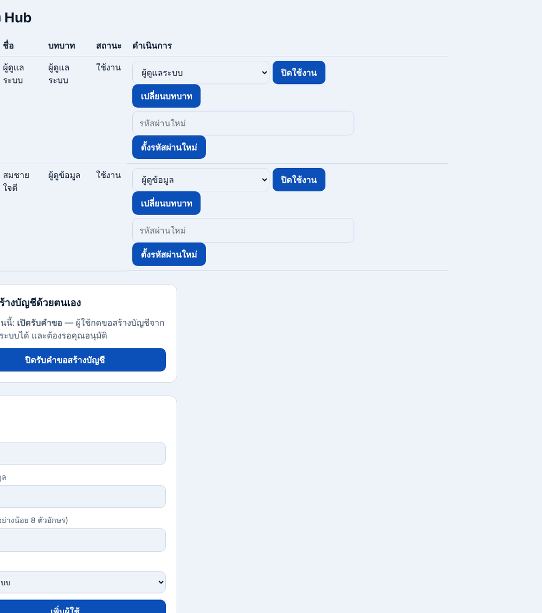
ภาพที่ 2 Hub › ผู้ใช้งาน สร้างบัญชี เปลี่ยนบทบาท รีเซ็ตรหัสผ่าน และปิดใช้งาน
Hub › ผู้ใช้งาน กรอกชื่อผู้ใช้ ชื่อ-สกุล เลือกบทบาท ตั้งรหัสผ่านเริ่มต้นอย่างน้อย 8 ตัวอักษร แล้วสร้าง
แจ้งชื่อผู้ใช้และรหัสผ่านให้เจ้าของบัญชีทางที่ปลอดภัย ไม่ใช่ในกลุ่มแชตรวม
เมื่อเจ้าของบัญชีเข้า Safety ครั้งแรก เขาจะโผล่ในรายการผู้ใช้ของ Safety พร้อมบทบาท «ผู้แจ้ง»
ผู้ใช้ขอสร้างบัญชีเอง และการอนุมัติ
หน้าเข้าสู่ระบบของ Hub มีลิงก์ «ยังไม่มีบัญชี? ขอสร้างบัญชี» พนักงานกรอกชื่อผู้ใช้ ชื่อ-นามสกุล และรหัสผ่านเอง บัญชีที่ได้ถูกสร้างเป็น «รออนุมัติ» คือปิดใช้งานอยู่และมีบทบาทผู้ดูข้อมูล เข้าระบบไม่ได้ และ Safety มองว่าบัญชีนั้นไม่ใช้งาน ขั้นตอนของผู้ดูแลมีดังนี้
เมื่อมีคำขอใหม่ หน้ารายการระบบของ Hub (ที่คุณเห็นหลังล็อกอิน) จะมีแถบเตือน «มีคำขอสร้างบัญชีรออนุมัติ N รายการ» และเมนูผู้ใช้มีตัวเลขกำกับ กดแล้วไปหน้าอนุมัติ หรือเปิด Hub › ผู้ใช้งาน กล่อง «รออนุมัติ (จำนวน)» อยู่บนสุดของหน้า
ตรวจชื่อผู้ใช้ ชื่อ-นามสกุล และคอลัมน์ «สังกัดที่ระบุ» (โรงงาน › แผนก › ไลน์ ที่ผู้ขอเลือกเอง) ว่าเป็นพนักงานจริง ถ้าไม่แน่ใจ ถามหัวหน้าของเขาก่อน
เลือกบทบาทของ Hub ที่เหมาะสมในช่องข้างปุ่ม แล้วกด อนุมัติ บัญชีเปิดใช้งานทันที หรือกด ปฏิเสธ เพื่อลบคำขอทิ้ง
บอกผู้ขอว่าอนุมัติแล้ว (ระบบยังไม่ส่งแจ้งเตือนให้ผู้ขอ) หลังจากเขาเข้า Safety ครั้งแรก ไปกำหนดบทบาทและขอบเขตที่ Safety › ผู้ใช้งาน ตรงชื่อเขาจะมีบรรทัดเล็ก «ระบุเองว่า: โรงงาน › แผนก › ไลน์» ให้ดูประกอบตอนกำหนดขอบเขต สังกัดที่ระบุเองเป็นข้อมูลอ้างอิงเท่านั้น ไม่ใช่สิทธิ์ ขอบเขตจริงต้องตั้งโดยผู้ดูแล
ระหว่างรออนุมัติ ปุ่มเปิดใช้งาน เปลี่ยนบทบาท และตั้งรหัสผ่านใหม่ใช้กับบัญชีนั้นไม่ได้ ต้องอนุมัติหรือปฏิเสธก่อน ปุ่มปฏิเสธลบได้เฉพาะบัญชีที่รออนุมัติ บัญชีที่ใช้งานแล้วลบด้วยปุ่มนี้ไม่ได้
มีคำขอค้างได้ไม่เกิน 50 รายการ เต็มแล้วผู้ขอรายใหม่จะถูกบอกให้ติดต่อผู้ดูแลโดยตรง เพื่อกันการสมัครรัว ๆ ท่วมหน้าอนุมัติ ตรวจกล่องรออนุมัติเป็นประจำ
การอนุมัติยังไม่ได้ให้สิทธิ์ใน Safety ผู้ที่เข้ามาครั้งแรกเป็น «ผู้แจ้ง» เหมือนเดิม
ปิดการขอบัญชีด้วยตนเองทั้งหมด ที่ Hub › ผู้ใช้งาน กล่อง «การขอสร้างบัญชีด้วยตนเอง» กด «ปิดรับคำขอสร้างบัญชี» ลิงก์บนหน้าเข้าสู่ระบบจะหายและหน้า /register ใช้ไม่ได้ คำขอที่ค้างอยู่ยังอนุมัติหรือปฏิเสธได้ กดเปิดกลับได้ทุกเมื่อรายการโรงงาน แผนก ไลน์ในฟอร์มมาจากข้อมูลหลักของ Safety (เฉพาะที่ใช้งานอยู่) จึงต้องกรอกข้อมูลหลักก่อนเปิดให้ผู้ใช้ขอบัญชี ถ้า Safety ปิดอยู่หรือยังไม่มีข้อมูล ฟอร์มจะให้พิมพ์โรงงาน/แผนก/ไลน์เองแทน การขอบัญชีไม่ล้มไปด้วย
ลืมรหัสผ่าน: Hub › ผู้ใช้งาน กดรีเซ็ตรหัสผ่านของคนนั้น แล้วแจ้งรหัสใหม่ ปิดบัญชีคนที่ลาออก: กดปิดใช้งาน ประวัติที่เขาเคยทำยังอยู่ครบ
ผู้ใช้ใน Safety
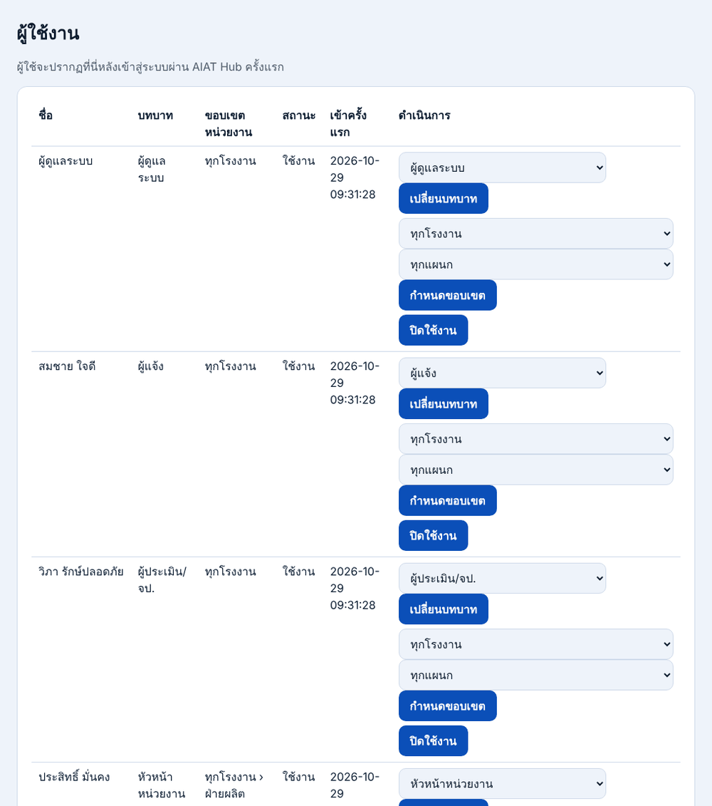
ภาพที่ 3 Safety › ผู้ใช้งาน ปรับบทบาท ขอบเขต และสถานะ ของแต่ละคน
การกระทำ ผล เปลี่ยนบทบาท เมนูและสิทธิ์เปลี่ยนเมื่อผู้ใช้โหลดหน้าถัดไป ไม่ต้องล็อกอินใหม่ กำหนดขอบเขต จำกัดว่าผู้ใช้เห็นและทำงานได้เฉพาะโรงงานหรือแผนกใด ดูหัวข้อถัดไป ปิดใช้งาน ผู้ใช้เข้า Safety ไม่ได้ ข้อมูลเดิมคงอยู่ ปิดผู้ดูแลระบบคนสุดท้ายไม่ได้
คุณกำหนดให้ใครได้สิทธิ์สูงกว่าที่ตัวเองมีไม่ได้ และจัดการผู้ใช้ที่มีสิทธิ์สูงกว่าคุณไม่ได้ ข้อนี้กันไม่ให้ผู้ที่ถือสิทธิ์จัดการผู้ใช้ยกระดับตัวเองขึ้นเป็นผู้ดูแลระบบ
ประเภทผู้ใช้งาน (บทบาท) และสิทธิ์
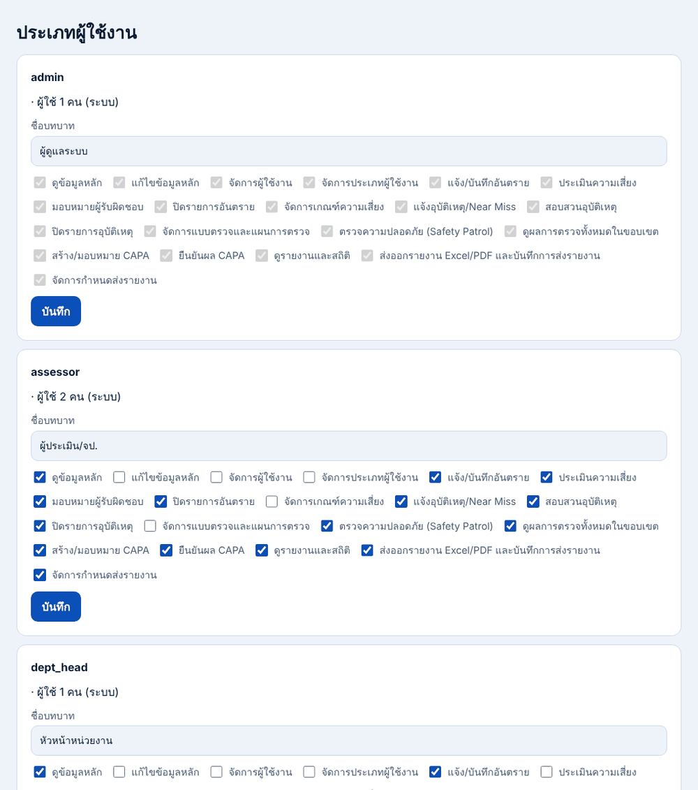
ภาพที่ 4 Safety › ประเภทผู้ใช้งาน แต่ละบทบาทมีกล่องติ๊กสิทธิ์ของตัวเอง บทบาทคือชุดของสิทธิ์ ผู้ใช้หนึ่งคนมีหนึ่งบทบาท ถ้าต้องการชุดที่ต่างจากที่มี ให้ เพิ่มบทบาทใหม่ โดยตั้งรหัส (a-z 0-9 _) กับชื่อ แล้วติ๊กสิทธิ์ ลบได้เฉพาะบทบาทที่คุณสร้างเองและไม่มีผู้ใช้ใช้อยู่ บทบาทที่ติดมากับระบบลบไม่ได้
ตารางสิทธิ์ทั้ง 20 ตัว และค่าตั้งต้นของบทบาทที่ติดมา
สิทธิ์ ทำอะไรได้ ผู้ดูแลระบบ ผู้ประเมิน/จป. หัวหน้าหน่วยงาน ผู้แจ้ง ผู้ดูข้อมูล master.viewดูข้อมูลหลัก ● ● ● ● master.editแก้ไขข้อมูลหลัก ● users.manageจัดการผู้ใช้งาน ● roles.manageจัดการประเภทผู้ใช้งาน ● hazard.reportแจ้ง/บันทึกอันตราย ● ● ● ● hazard.assessประเมินความเสี่ยง ● ● hazard.assignมอบหมายผู้รับผิดชอบ ● ● ● hazard.closeปิดรายการอันตราย ● ● ● criteria.manageจัดการเกณฑ์ความเสี่ยง ● incident.reportแจ้งอุบัติเหตุ/Near Miss ● ● ● ● incident.investigateสอบสวนอุบัติเหตุ ● ● ● incident.closeปิดรายการอุบัติเหตุ ● ● patrol.manageจัดการแบบตรวจและแผนการตรวจ ● patrol.performตรวจความปลอดภัย (Safety Patrol) ● ● patrol.viewดูผลการตรวจทั้งหมดในขอบเขต ● ● ● capa.createสร้าง/มอบหมาย CAPA ● ● ● capa.verifyยืนยันผล CAPA ● ● report.viewดูรายงานและสถิติ ● ● ● report.exportส่งออกรายงาน Excel/PDF และบันทึกการส่งรายงาน ● ● ● report.manageจัดการกำหนดส่งรายงาน ● ●
บทบาทเดิมไม่ได้รับสิทธิ์ใหม่อัตโนมัติ ตารางข้างบนคือค่าตั้งต้นของบทบาทที่สร้างใหม่ ถ้าองค์กรของคุณใช้ระบบมาก่อนหน้านี้ แล้วระบบเพิ่มสิทธิ์ใหม่ (เช่น incident.*, patrol.*, capa.*, report.*) ต้องเข้ามาติ๊กให้บทบาทเดิมเอง ยกเว้นผู้ดูแลระบบที่ได้ครบเสมอ ถ้าผู้ใช้บอกว่าไม่เห็นเมนูรายงานหรือ CAPA หลังอัปเกรด สาเหตุคือข้อนี้
สิทธิ์ต่าง ๆ ใช้ตอนไหน
สิทธิ์ ใช้ทำอะไรในหน้าจอ hazard.reportเห็นเมนู «ลงทะเบียนบันทึกอันตราย» และฟอร์มแจ้ง hazard.assessกล่อง «ประเมินความเสี่ยง» และ «ปฏิเสธรายการ» และเห็นรายการทั้งหมดในขอบเขต hazard.assignกล่อง «มอบหมายผู้รับผิดชอบ» hazard.closeกล่อง «ปิดรายการ» และการแนบรูปหลังแก้ไข incident.report / investigate / closeแจ้ง / มอบหมายผู้สอบสวน บันทึกผลสอบสวน ปรับระดับ แก้รายชื่อ ปฏิเสธ / ปิดรายการอุบัติเหตุ patrol.manageหน้าแบบตรวจและแผนการตรวจ patrol.perform / viewลงมือตรวจ / ดูผลการตรวจทุกรอบในขอบเขต capa.create / verifyสร้าง มอบหมาย เปลี่ยนเจ้าของ ยกเลิก CAPA / ยืนยันผลหรือตีกลับ report.view / export / manageดูรายงาน / ส่งออก Excel-PDF และบันทึกว่าส่งรายงานแล้ว / ตั้งกำหนดส่งรายงาน master.view / editดูและเห็นรายการทั้งหมดในขอบเขต / เพิ่มและแก้ข้อมูลหลัก users.manageหน้าผู้ใช้งาน และหน้าการแจ้งเตือน roles.manageหน้าประเภทผู้ใช้งาน criteria.manageเกณฑ์ความเสี่ยง ฟิลด์เพิ่มเติม ระดับบาดเจ็บ ตั้งค่า CAPA
เจ้าของงานไม่ต้องมีสิทธิ์พิเศษเพื่อทำงานที่ได้รับมอบหมาย ผู้รับผิดชอบรายการอันตราย และเจ้าของ CAPA เปิดงานของตัวเองดูได้และเริ่มหรือจบ CAPA ได้แม้เป็นบทบาท «ผู้แจ้ง» เพียงแต่การปิดรายการอันตรายยังต้องมีสิทธิ์ hazard.close
ขอบเขตโรงงานและแผนก
ผู้ใช้แต่ละคนกำหนดขอบเขตได้ว่าอยู่โรงงานใดและแผนกใด ตัวอย่างที่เห็นบ่อย
ขอบเขตที่ตั้ง ผู้ใช้เห็นและทำงานได้ เหมาะกับ ทุกโรงงาน / ทุกแผนก (ค่าเริ่มต้น) ทั้งบริษัท ผู้ดูแลระบบ ผู้บริหาร จป. ส่วนกลาง เลือกโรงงาน ไม่เลือกแผนก ทุกแผนกในโรงงานนั้น จป. ประจำโรงงาน เลือกทั้งโรงงานและแผนก เฉพาะแผนกนั้น หัวหน้าหน่วยงาน
ขอบเขตมีผลกับทุกอย่าง รายการที่เห็น พื้นที่ที่เลือกแจ้งได้ ผู้รับผิดชอบที่เลือกมอบหมายได้ (ผู้ที่อยู่นอกขอบเขตของรายการถูกปฏิเสธ) รายงาน และผู้รับแจ้งเตือน ผู้ใช้ที่ขอบเขตไม่ครอบคลุมพื้นที่ของรายการจะไม่ได้รับแจ้งเตือนของรายการนั้น เพราะเปิดดูไม่ได้อยู่แล้ว
กติกาสองคนตรวจกัน
ระบบบังคับให้คนทำและคนตรวจรับเป็นคนละคนในจุดที่เสี่ยงต่อการเซ็นเอง ผู้ดูแลระบบหลีกเลี่ยงกติกาเหล่านี้ไม่ได้ จึงควรมีคนที่ถือสิทธิ์ปิดและยืนยันอย่างน้อยสองคนในแต่ละโรงงาน
เรื่อง กติกา ปิดรายการอันตรายระดับที่ต้องอนุมัติ ผู้ปิดต้องไม่เคยเป็นผู้รับผิดชอบรายการนั้น ไม่ว่าปัจจุบันหรือก่อนโอนงาน (ระดับ «สูงมาก» ตามค่าตั้งต้น) ปิดรายการอุบัติเหตุ ผู้ปิดต้องไม่เคยเป็นผู้สอบสวนรายการนั้น ยืนยันผล CAPA ผู้ยืนยันต้องไม่เคยเป็นเจ้าของงาน และต้องไม่ใช่คนที่กดว่าเสร็จ ต้องมีผู้ถือ capa.verify อย่างน้อยสองคน บันทึกผลสอบสวน เฉพาะผู้สอบสวนที่ได้รับมอบหมาย หรือผู้ดูแลระบบ
บทที่ 5 ข้อมูลหลัก และเกณฑ์ความเสี่ยงโครงสร้างองค์กร
พื้นที่เสี่ยงทุกแห่งผูกกับสายเดียวที่ไล่ขึ้นไปถึงโรงงาน ผู้ใช้เลือกพื้นที่ตอนแจ้งและขอบเขตของผู้ใช้อ้างอิงสายนี้ จึงต้องสร้างจากบนลงล่าง
โรงงาน เช่น โรงงานบางนา
แผนก เช่น ฝ่ายผลิต อยู่ภายใต้โรงงาน
ไลน์/กลุ่มงาน เช่น ไลน์ประกอบ 1 อยู่ภายใต้แผนก
พื้นที่เสี่ยง เช่น จุดป้อนวัตถุดิบ อยู่ภายใต้ไลน์
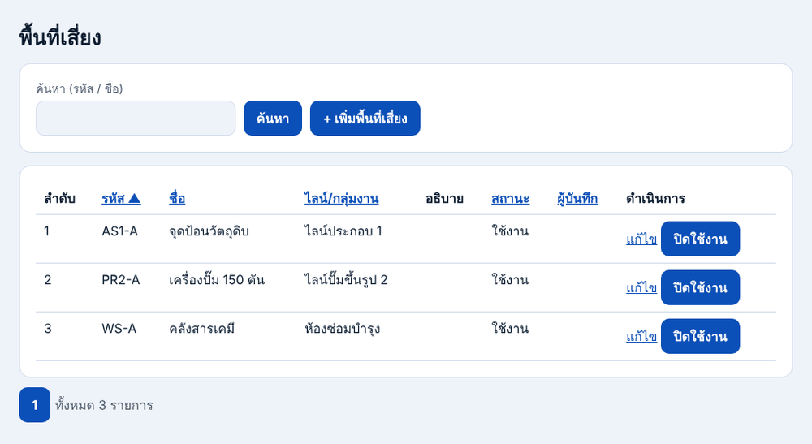
ภาพที่ 5 Safety › พื้นที่เสี่ยง แสดงสายโรงงาน › ฝ่าย › ไลน์ ของแต่ละพื้นที่ 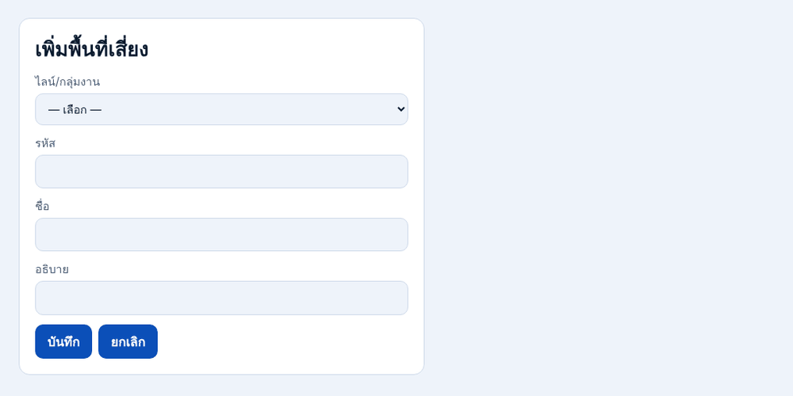
ภาพที่ 6 ฟอร์มเพิ่มพื้นที่เสี่ยง เลือกไลน์แม่ แล้วกรอกรหัส ชื่อ และคำอธิบาย
ช่อง กติกา รหัส A-Z a-z 0-9 _ - ความยาว 1–32 ตัวอักษร ห้ามซ้ำในตารางเดียวกัน ตั้งแล้วแก้ไม่ควร เพราะใช้ในรายงาน ชื่อ ไม่เกิน 200 ตัวอักษร ชื่อที่ผู้ใช้เห็นในรายการเลือก ตั้งให้สื่อสถานที่จริง เช่น «เครื่องปั๊ม 150 ตัน» ดีกว่า «พื้นที่ 3» อธิบาย ไม่เกิน 1,000 ตัวอักษร ไม่บังคับ
ปิดใช้งานแทนลบ พื้นที่ที่ปิดแล้วหายจากรายการเลือกของผู้ใช้ แต่รายการเก่ายังแสดงชื่อเดิม เมื่อมีการยุบหรือเปลี่ยนชื่อไลน์ ให้เพิ่มรายการใหม่แล้วปิดอันเก่า ผู้ใช้ที่ขอบเขตผูกกับโรงงานหรือแผนกที่ถูกปิดจะเลือกพื้นที่ไม่ได้ ตรวจรายการผู้ใช้ก่อนปิดโครงสร้างทุกครั้ง
ประเภทอันตราย แหล่งที่มา สาเหตุอุบัติเหตุ
สามรายการนี้เป็นตัวเลือกในฟอร์มของผู้ใช้ มีหน้าจอแบบเดียวกัน (เพิ่ม แก้ไข ปิดใช้งาน) ประเภทอันตราย และแหล่งที่มา เริ่มจากว่างเปล่า คุณต้องเพิ่มก่อนที่ใครจะแจ้งอันตรายได้ ไม่เช่นนั้นฟอร์มจะบอกให้เลือกแต่ไม่มีให้เลือก สาเหตุอุบัติเหตุมีค่าตั้งต้นห้าตัวตามหลัก 4M1E (คน เครื่องจักร/อุปกรณ์ วิธีการทำงาน วัสดุ สภาพแวดล้อม)
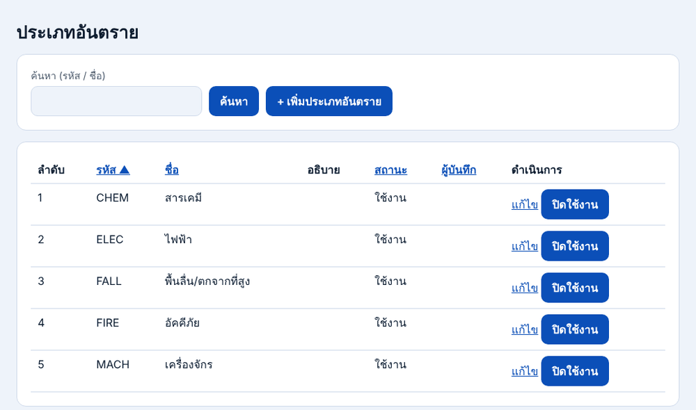
ภาพที่ 7 รายการประเภทอันตราย คำแนะนำในการตั้งรายการ ประเภทอันตรายไม่ควรเกิน 8–10 ประเภท มากกว่านั้นผู้ใช้เลือกผิดบ่อยและรายงานอ่านยาก ใช้ชื่อเดียวกับที่หน้างานเรียก ไม่ใช่ชื่อในมาตรฐานเอกสาร
เกณฑ์ความเสี่ยง
เมนู เกณฑ์ความเสี่ยง (ต้องมี criteria.manage) กำหนดสามอย่าง คือมาตราส่วนโอกาส มาตราส่วนความรุนแรง และระดับความเสี่ยง คะแนน = โอกาส × ความรุนแรง
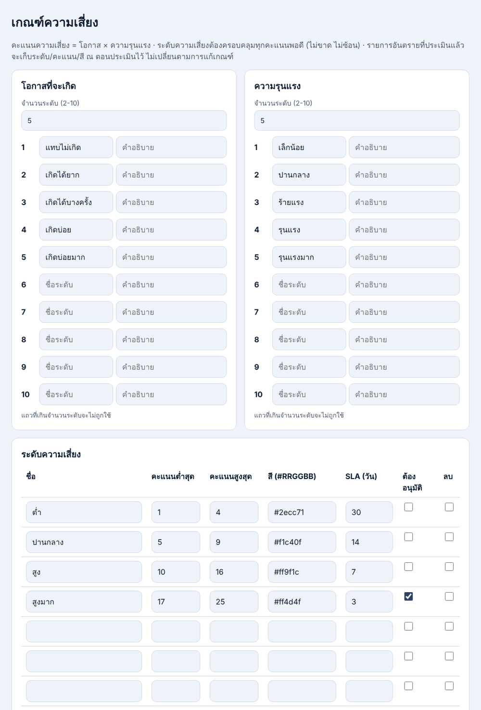
ภาพที่ 8 เกณฑ์ความเสี่ยง ตั้งค่าตั้งต้นเป็น 5×5 สี่ระดับ
ส่วน ตั้งอะไรได้ และกติกา มาตราส่วนโอกาส และความรุนแรง จำนวนระดับ 2–10 ใส่ชื่อ (ไม่เกิน 100 ตัวอักษร) และคำอธิบาย (ไม่เกิน 300) ของแต่ละระดับ คำอธิบายจะช่วยให้ผู้ประเมินให้คะแนนตรงกัน ลดจำนวนระดับลงไม่ได้ถ้ามีรายการอันตรายที่ใช้ค่านั้นอยู่ ระดับความเสี่ยง ชื่อ ช่วงคะแนน สี (#RRGGBB) SLA เป็นจำนวนวัน และ «ต้องอนุมัติ» ช่วงคะแนนของทุกระดับต้องครอบคลุมตั้งแต่ 1 ถึงคะแนนสูงสุดพอดี ห้ามซ้อนและห้ามขาด ถ้าไม่ครบระบบไม่ยอมบันทึกและบอกว่าคะแนนช่วงไหนที่ไม่มีระดับรองรับ SLA (วัน) เมื่อมอบหมายผู้รับผิดชอบโดยไม่ใส่วันครบกำหนด ระบบนับจากวันนี้ไปตามจำนวนวันของระดับนั้น ต้องอนุมัติ เปิดแล้วรายการระดับนี้ต้องให้ผู้ที่ไม่เคยเป็นผู้รับผิดชอบเป็นผู้ปิด และการแจ้งเตือน «ประเมินความเสี่ยงแล้ว» ไปถึงหัวหน้าหน่วยงานตามกฎ (ค่าตั้งต้นสำหรับคะแนน 17 ขึ้นไป)
แก้เกณฑ์แล้วรายการเดิมไม่เปลี่ยน เมื่อประเมินรายการ ระบบเก็บคะแนน ชื่อระดับ สี และเงื่อนไขอนุมัติ ณ ตอนนั้นไว้กับรายการ แก้เกณฑ์วันนี้จึงมีผลกับการประเมินครั้งถัดไป ส่วนรายการที่ประเมินแล้วจะแสดงตามที่ประเมินไว้ ตัวเลข «ความเสี่ยงสูง» บนหน้าหลักและแผนที่ความเสี่ยงอ่านระดับจากเกณฑ์ปัจจุบัน
ระดับความรุนแรงของการบาดเจ็บ
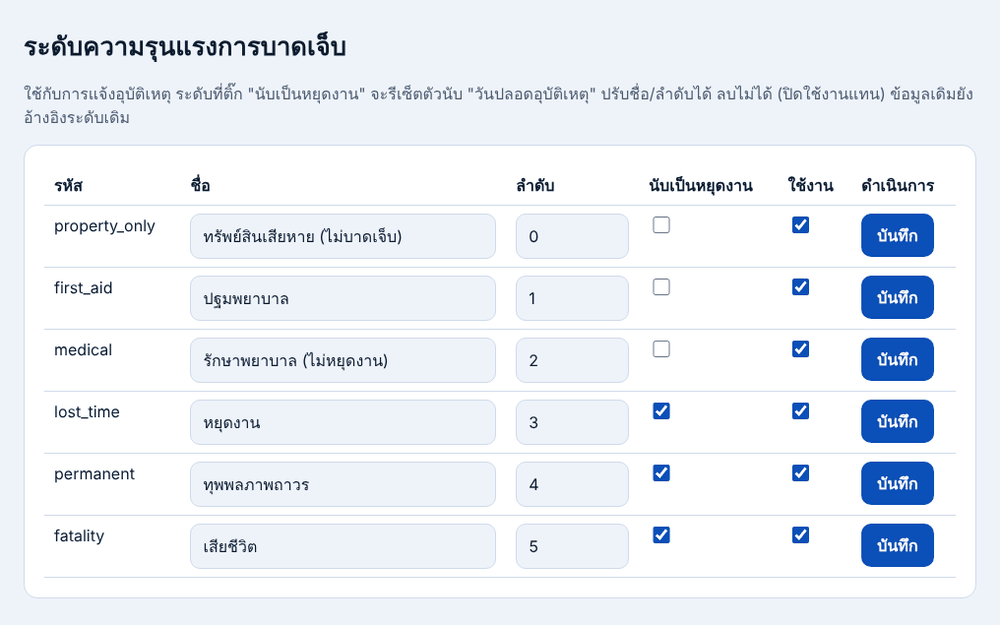
ภาพที่ 9 ระดับบาดเจ็บ ช่อง «นับเป็นหยุดงาน» กำหนดว่าระดับไหนรีเซ็ตตัวนับวันปลอดอุบัติเหตุ ใช้กับการแจ้งอุบัติเหตุ ค่าตั้งต้นมีหกระดับ (ทรัพย์สินเสียหาย ปฐมพยาบาล รักษาพยาบาลไม่หยุดงาน หยุดงาน ทุพพลภาพถาวร เสียชีวิต) สามระดับท้ายนับเป็น «หยุดงาน» ตามค่าตั้งต้น ปรับชื่อและลำดับได้ ลบไม่ได้ ติ๊ก «นับเป็นหยุดงาน» ให้ตรงกับนิยามของบริษัท เพราะเป็นตัวกำหนด การ์ดวันปลอดอุบัติเหตุหยุดงาน บนหน้าหลัก และเมื่อติ๊กแล้ว การบันทึกผลสอบสวนต้องระบุจำนวนวันที่หยุดงาน
ฟิลด์เพิ่มเติมของรายการอันตราย
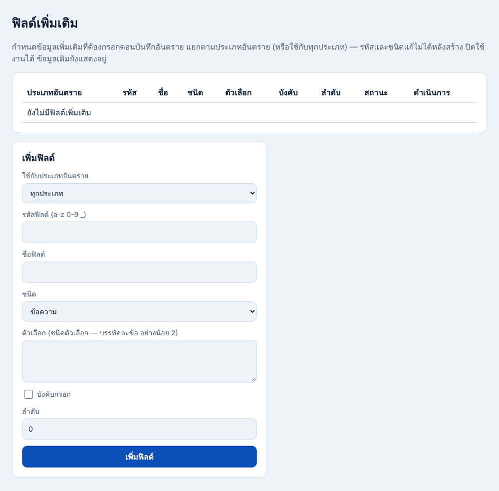
ภาพที่ 10 ฟิลด์เพิ่มเติม ผูกกับประเภทอันตรายหนึ่งประเภท หรือทุกประเภท เมื่อบริษัทอยากเก็บข้อมูลเฉพาะบางประเภท เช่น ประเภท «สารเคมี» ต้องกรอกชื่อสาร เพิ่มเป็นฟิลด์ได้โดยไม่ต้องแก้โปรแกรม เลือกประเภทอันตรายที่ใช้ ตั้งรหัสฟิลด์ (a-z 0-9 _) ชื่อที่ผู้ใช้เห็น และชนิด ได้แก่ ข้อความ ตัวเลข วันที่ ช่องทำเครื่องหมาย หรือตัวเลือก (ใส่ตัวเลือกบรรทัดละข้อ อย่างน้อยสองข้อ) ฟิลด์ที่ไม่ผูกประเภทจะขึ้นกับทุกประเภท ถ้าติ๊ก «บังคับ» ผู้ใช้ต้องกรอก ถ้าปิดใช้งานฟิลด์ ค่าที่เคยกรอกไว้ในรายการเดิมยังแสดงอยู่
บทที่ 6 การทำงานของแต่ละกระบวนการบทนี้อธิบายจากมุมของคนที่ต้องตอบคำถามผู้ใช้ ว่าแต่ละขั้นใครทำได้ ระบบตรวจอะไร และเมื่อไหร่ที่ระบบปฏิเสธ
6.1 รายการอันตราย
แจ้งแล้ว hazard.report
ประเมินแล้ว hazard.assess
มอบหมายแล้ว hazard.assign
ปิดแล้ว hazard.close
นอกเหนือจากนี้ผู้ถือ hazard.assess สั่ง ปฏิเสธ ได้ในทุกสถานะที่ยังเปิด โดยต้องใส่เหตุผล เหตุผลนี้ผู้แจ้งอ่านได้
ประเมินความเสี่ยง
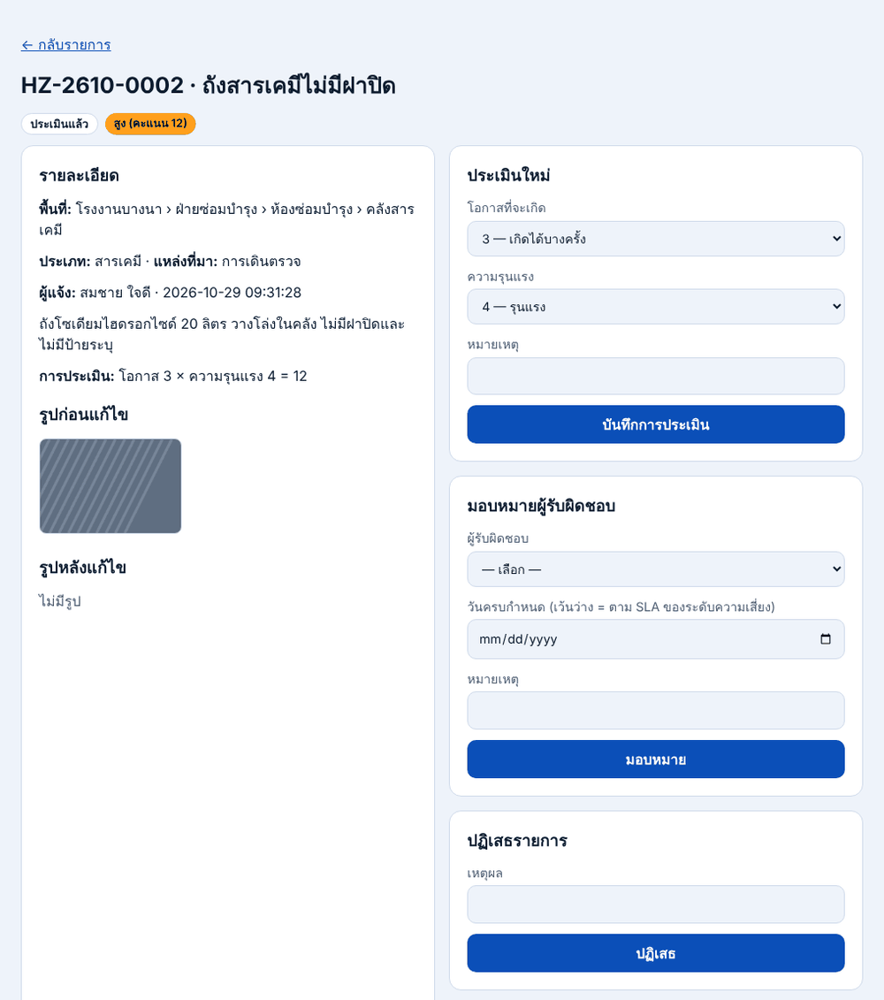
ภาพที่ 11 หน้ารายการที่รอประเมิน ผู้ประเมินเห็นกล่อง «ประเมินความเสี่ยง» «มอบหมายผู้รับผิดชอบ» และ «ปฏิเสธรายการ» ทางขวา เลือกโอกาสและความรุนแรง ระบบคำนวณคะแนนและระดับให้ทันที (ในภาพ 3 × 4 = 12 ระดับสูง) ประเมินซ้ำได้ตราบที่ยังไม่มอบหมาย ปุ่มจะเปลี่ยนเป็น «ประเมินใหม่» และประวัติเก็บทั้งค่าเก่าและค่าใหม่ ถ้าขึ้นว่า «คะแนนนี้ไม่มีระดับความเสี่ยงรองรับ» แปลว่าเกณฑ์ในบทที่ 5 มีช่องว่าง ให้ไปแก้เกณฑ์ก่อน
มอบหมาย
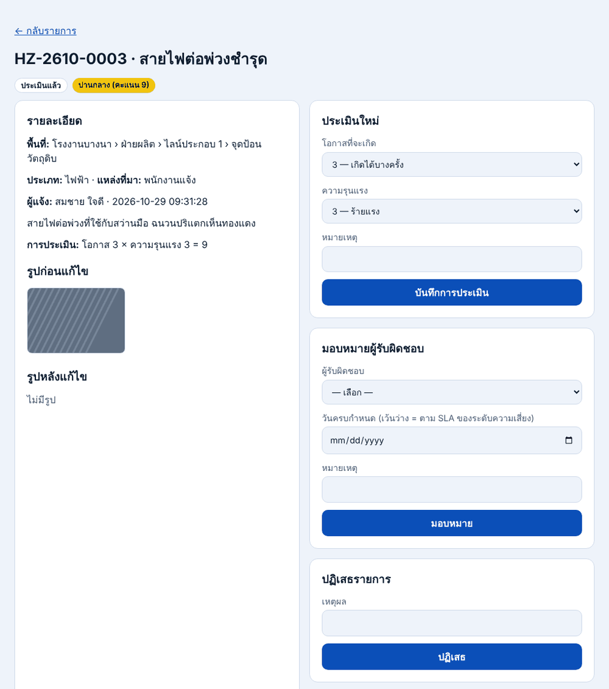
ภาพที่ 12 กล่องมอบหมาย เว้นวันครบกำหนดไว้เพื่อใช้ SLA ของระดับความเสี่ยง
เลือกผู้รับผิดชอบได้เฉพาะคนที่ใช้งานอยู่และขอบเขตครอบคลุมพื้นที่ของรายการ
วันครบกำหนดต้องไม่เป็นอดีตและไม่เกิน 1 ปีนับจากวันนี้ ถ้าเว้นว่าง ระบบใช้วันนี้บวก SLA ของระดับ
เปลี่ยนผู้รับผิดชอบกลางทางได้ ผู้รับผิดชอบเดิมยังถูกนับเป็น «เคยรับผิดชอบ» ตามกติกาสองคนตรวจกัน
ปิดรายการ
ปิดได้เมื่อสถานะ «มอบหมายแล้ว» ต้องกรอกผลการแก้ไข (ไม่เกิน 1,000 ตัวอักษร) และแนบรูปหลังแก้ไขได้ในกล่องเดียวกัน (สูงสุด 5 รูป) ระบบปฏิเสธการปิดเมื่อ
ผู้ปิดเคยเป็นผู้รับผิดชอบ และรายการอยู่ในระดับที่ต้องอนุมัติ
เปิดใช้การบังคับ CAPA (ดูหัวข้อ 6.4) แล้วยังมี CAPA ที่ไม่ยืนยันและไม่ถูกยกเลิก ข้อความจะบอกจำนวนที่เหลือ
คนอื่นเพิ่งเปลี่ยนสถานะรายการระหว่างที่คุณเปิดหน้าอยู่ ระบบให้รีเฟรชแล้วทำใหม่ ไม่เขียนทับ
6.2 อุบัติเหตุ และ Near Miss
แจ้งแล้ว incident.report
กำลังสอบสวน มอบหมายผู้สอบสวน
ตั้งมาตรการแล้ว บันทึกผลสอบสวน
ปิดแล้ว incident.close
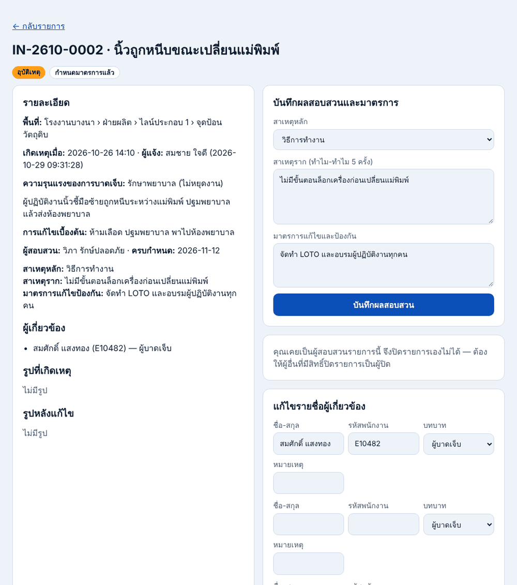
ภาพที่ 13 หน้าอุบัติเหตุที่รอการสอบสวน ผู้สอบสวนเห็นรายชื่อผู้เกี่ยวข้อง กล่องมอบหมาย ผลสอบสวน และการปรับระดับ
ขั้น รายละเอียด มอบหมายผู้สอบสวน เลือกได้เฉพาะผู้ที่มีสิทธิ์ incident.investigate และขอบเขตครอบคลุมพื้นที่ ถ้าไม่ใส่วันครบกำหนดจะเป็น 14 วัน บันทึกผลสอบสวน เลือกสาเหตุหลัก (จากตารางสาเหตุอุบัติเหตุ) เขียนสาเหตุราก (วิธีถามทำไมห้าครั้ง) และมาตรการแก้ไขป้องกัน ทำได้เฉพาะผู้สอบสวนที่ได้รับมอบหมายหรือ admin ถ้าระดับบาดเจ็บนับเป็นหยุดงาน ต้องกรอกจำนวนวันหยุดงาน (0–3,650) ปิดรายการ ผู้ถือ incident.close ที่ไม่เคยเป็นผู้สอบสวนรายการนั้น ใส่สรุปผล (ไม่เกิน 1,000 ตัวอักษร) ปรับระดับบาดเจ็บ ผู้สอบสวนปรับได้แม้หลังปิดรายการ ต้องใส่เหตุผล และบันทึกในประวัติ ใช้เมื่อผลการรักษาเปลี่ยนไปทีหลัง เช่น จากรักษาพยาบาลเป็นหยุดงาน ซึ่งมีผลกับตัววันปลอดอุบัติเหตุ แก้รายชื่อผู้เกี่ยวข้อง ผู้สอบสวน แทนที่รายชื่อเดิมทั้งหมดด้วยรายชื่อที่ส่งมา และบันทึกในประวัติ ปฏิเสธ ใส่เหตุผลไม่เกิน 500 ตัวอักษร ใช้กับรายการแจ้งซ้ำหรือแจ้งผิดประเภท
รายชื่อผู้เกี่ยวข้องเป็นข้อมูลส่วนบุคคล เห็นได้เฉพาะผู้ถือสิทธิ์สอบสวนหรือปิดรายการอุบัติเหตุ กับผู้แจ้ง รายงานและสถิติทุกชนิดไม่มีชื่อบุคคล และมีเทสต์อัตโนมัติคอยตรวจ ถ้ามีคำขอตามนโยบายข้อมูลส่วนบุคคล เช่น ให้ลบชื่อ ระบบยังไม่มีเครื่องมือลบหรือปกปิดย้อนหลัง ต้องปรึกษาผู้พัฒนา
หน้า สถิติอุบัติเหตุ (ผู้ถือ incident.investigate) สรุปจำนวนตามประเภท สถานะ รายเดือน และวันปลอดอุบัติเหตุหยุดงาน
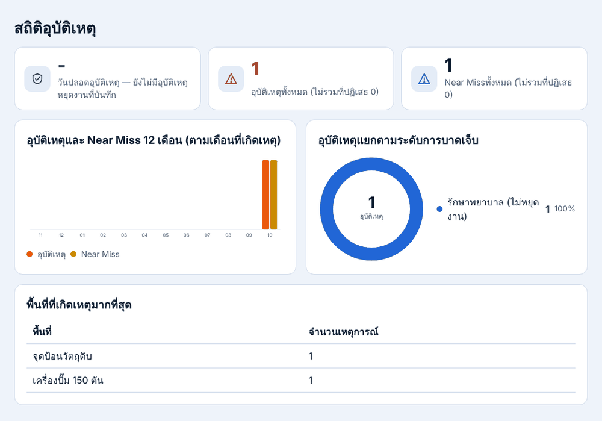
ภาพที่ 14 สถิติอุบัติเหตุ 6.3 Safety Patrol
การเดินตรวจตามแบบตรวจที่กำหนด ผลที่ไม่ผ่านต่อยอดเป็นรายการอันตรายหรือ CAPA ได้ในคลิกเดียว
ตั้งแบบตรวจ
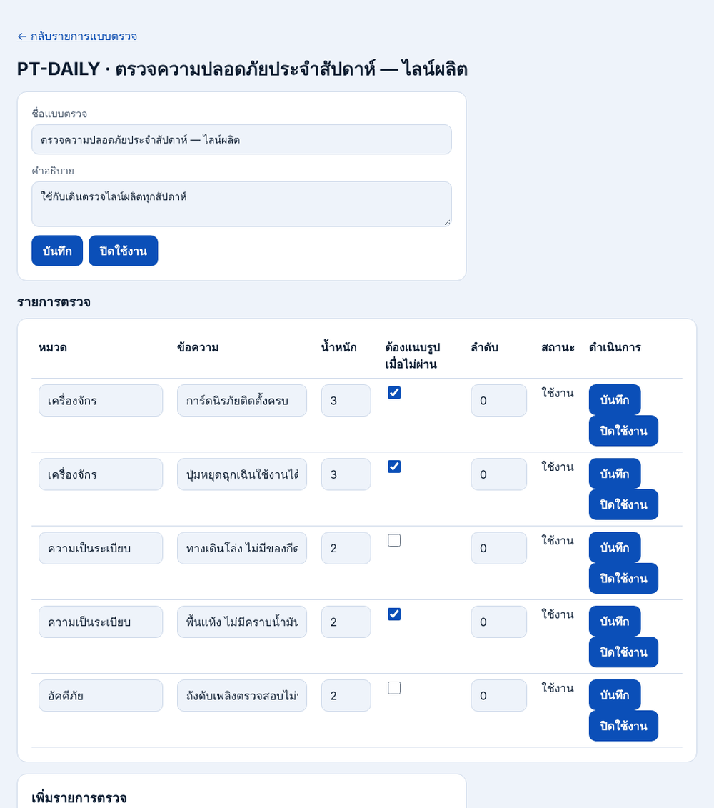
ภาพที่ 15 แบบตรวจและรายการตรวจ แบ่งเป็นหมวด ตั้งน้ำหนักคะแนน และบังคับแนบรูปเมื่อไม่ผ่านได้ทีละข้อ
เมนู แบบตรวจความปลอดภัย › เพิ่มแบบตรวจ ตั้งรหัส (A-Z 0-9 _ -) ชื่อ และคำอธิบาย
เปิดแบบตรวจนั้น เพิ่มรายการตรวจทีละข้อ ใส่ หมวด (ใช้จัดกลุ่มตอนตรวจ) ข้อความ และ น้ำหนักคะแนน 1–10 ข้อที่สำคัญกว่าให้น้ำหนักสูง
ติ๊ก ต้องแนบรูปเมื่อไม่ผ่าน ในข้อที่ต้องการหลักฐาน ผู้ตรวจจะส่งผลไม่ได้ถ้าไม่ได้แนบ
แบบตรวจและรายการตรวจลบไม่ได้ ปิดใช้งานแทน เมื่อเริ่มรอบตรวจ ระบบคัดลอกรายการตรวจ ณ ตอนนั้น ไปใส่ในรอบ การแก้แบบตรวจทีหลังจึงไม่กระทบรอบที่เริ่มไปแล้วและรอบที่ส่งแล้ว
ตั้งแผนการตรวจ
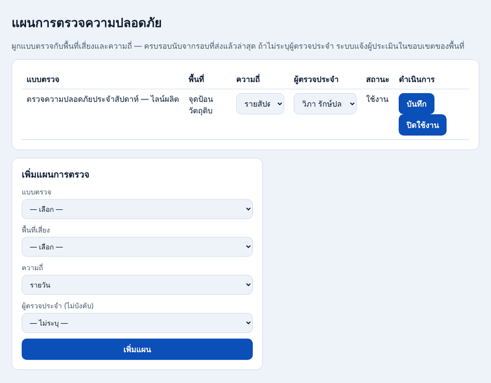
ภาพที่ 16 แผนการตรวจ ผูกแบบตรวจกับพื้นที่ ความถี่ และผู้ตรวจประจำ แผนผูกแบบตรวจกับพื้นที่เสี่ยง ความถี่ (รายวัน รายสัปดาห์ รายเดือน) และผู้ตรวจประจำ ระบบนับรอบจากรอบที่ ส่งแล้ว ล่าสุด เมื่อถึงรอบจะแจ้งเตือน และเตือนอีกเมื่อเลยรอบ ถ้าไม่ระบุผู้ตรวจประจำ ระบบแจ้งไปยังกฎสำรองซึ่งตามค่าตั้งต้นคือผู้ประเมินในขอบเขตของพื้นที่ แก้ได้ที่หน้าการแจ้งเตือน (ผู้รับแบบ owner_else:assessor ดูบทที่ 8)
การตรวจจริง
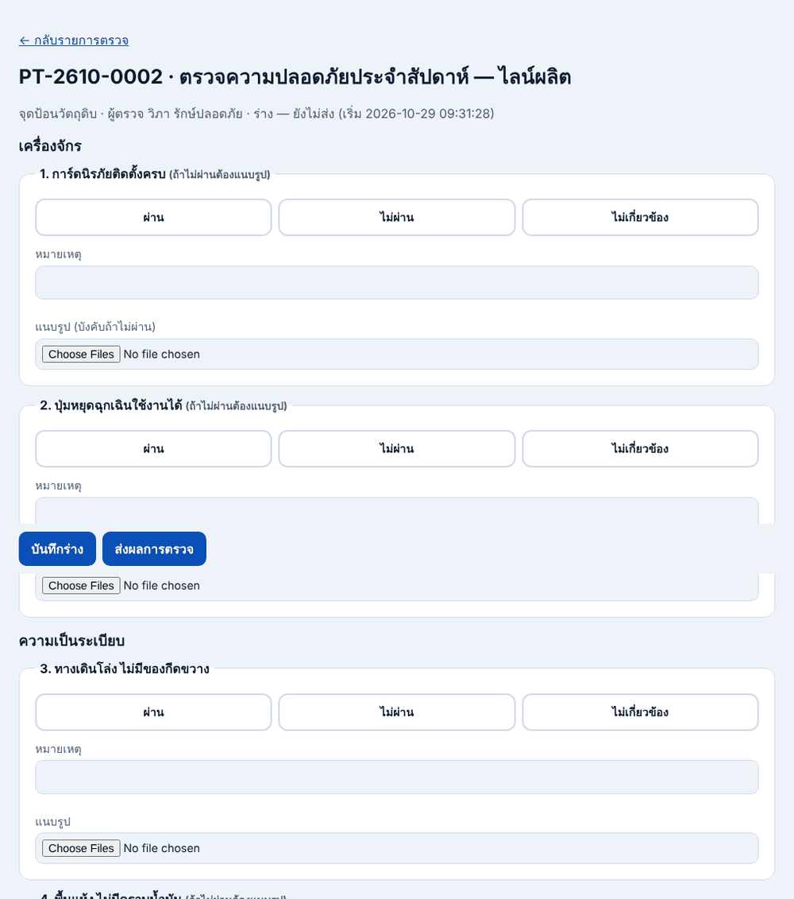
ภาพที่ 17 รอบตรวจที่กำลังทำ (ร่าง) ตอบผ่าน/ไม่ผ่าน/ไม่เกี่ยวข้อง พร้อมหมายเหตุและรูปได้ทีละข้อ
ผู้ตรวจ (ผู้ถือ patrol.perform) เปิดเมนู ตรวจความปลอดภัย แล้วกด «เริ่มตรวจ» ที่แผนที่ถึงรอบ หรือเลือกแบบตรวจกับพื้นที่เองแล้วกด «เริ่มรอบตรวจ»
ตอบทุกข้อ ใส่หมายเหตุหรือแนบรูป กด «บันทึกร่าง» ได้ระหว่างทาง รอบที่ยังเป็นร่างมองเห็นเฉพาะผู้ตรวจเจ้าของและ admin ถ้ากดเริ่มตรวจซ้ำกับแบบตรวจและพื้นที่เดียวกัน ระบบพากลับไปร่างเดิม ไม่สร้างใบใหม่
กด ส่งผลการตรวจ ระบบปฏิเสธถ้ายังตอบไม่ครบ หรือข้อที่ไม่ผ่านและบังคับรูปยังไม่มีรูป ส่งแล้วแก้ไม่ได้
คะแนนรอบ = น้ำหนักรวมของข้อที่ผ่าน ÷ น้ำหนักรวมของข้อที่ผ่านและไม่ผ่าน ข้อ «ไม่เกี่ยวข้อง» ไม่นำมาคิด แสดงเป็นเปอร์เซ็นต์
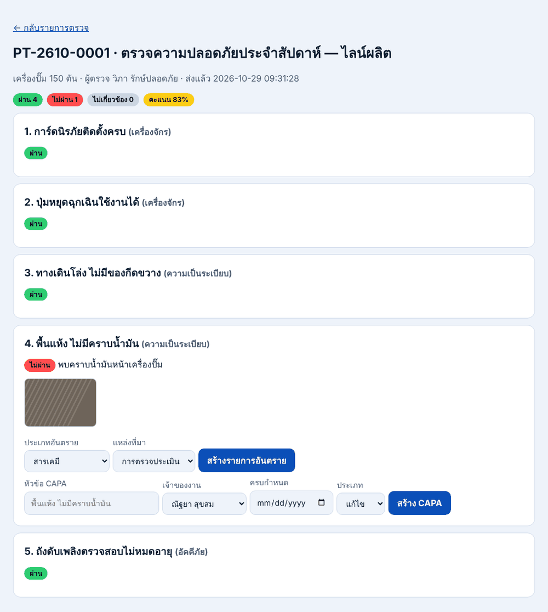
ภาพที่ 18 รอบที่ส่งแล้ว ข้อที่ไม่ผ่านมีปุ่มสร้างรายการอันตรายหรือ CAPA ต่อทันที จากข้อที่ไม่ผ่านไปสู่การแก้ไข
ในรอบที่ส่งแล้ว ทุกข้อที่ไม่ผ่านมีสองปุ่ม สร้างรายการอันตราย (เลือกประเภทและแหล่งที่มา ข้อความและรูปของข้อนั้นถูกคัดลอกเป็นรายการอันตราย) และ สร้าง CAPA (ใส่หัวข้อ เจ้าของงาน ครบกำหนด และประเภท) กดซ้ำจะได้รายการเดิม ไม่เกิดรายการซ้ำสองใบ ผู้ตรวจที่มีแค่สิทธิ์ตรวจก็สร้างได้ ไม่ต้องมีสิทธิ์แจ้งอันตรายหรือสร้าง CAPA แยก
ผู้ที่เห็นผลการตรวจ ผู้ถือ patrol.view เห็นทุกรอบที่ส่งแล้วในขอบเขต ผู้ตรวจที่มี patrol.perform อย่างเดียวเห็นรอบของตัวเอง
6.4 CAPA
เปิด สร้างและมอบหมาย
กำลังดำเนินการ เจ้าของกดเริ่ม
เสร็จ รอยืนยัน เจ้าของบันทึกผล
ยืนยันแล้ว ผู้ยืนยันที่เป็นคนละคน
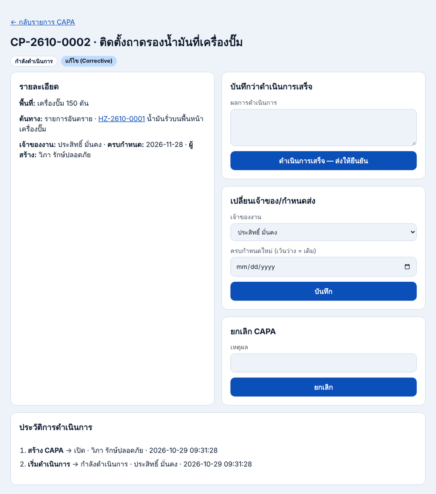
ภาพที่ 19 CAPA ที่เจ้าของงานเริ่มดำเนินการแล้ว ผู้มีสิทธิ์สร้างเห็นกล่องบันทึกผล เปลี่ยนเจ้าของ และยกเลิก
การกระทำ ใครทำได้ / เงื่อนไข สร้าง CAPA ผู้ถือ capa.create จากหน้ารายการอันตราย หน้าอุบัติเหตุ (ปุ่ม «+ สร้าง CAPA») หรือเมนู CAPA แหล่งที่มาเป็นอันตราย อุบัติเหตุ ข้อไม่ผ่านจากการตรวจ หรือสร้างเอง ต้องมีเจ้าของงานที่ขอบเขตครอบคลุมพื้นที่ และวันครบกำหนดที่ไม่เกิน 730 วัน เริ่มดำเนินการ เจ้าของงานเท่านั้น บันทึกว่าเสร็จ เจ้าของงาน หรือผู้ถือ capa.create ต้องกรอกผลการดำเนินการ ยืนยันผล ผู้ถือ capa.verify ที่ไม่เคยเป็นเจ้าของงาน และไม่ใช่ผู้กดว่าเสร็จ กำหนดวันตรวจประสิทธิผลล่วงหน้าได้ ตีกลับ ผู้ยืนยัน ต้องใส่เหตุผล งานกลับเป็น «กำลังดำเนินการ» และนับจำนวนครั้งที่ถูกตีกลับ เปลี่ยนเจ้าของ/กำหนดส่ง ผู้ถือ capa.create ขณะที่ยังเปิดหรือกำลังดำเนินการ ยกเลิก ผู้สร้าง หรือผู้ถือ capa.create ใส่เหตุผล บันทึกผลตรวจประสิทธิผล หลังยืนยันแล้ว เลือกผล «ได้ผล» หรือ «ไม่ได้ผล» พร้อมหมายเหตุ บันทึกได้ครั้งเดียว แก้ไขภายหลังไม่ได้
บังคับให้ CAPA ครบก่อนปิดรายการ
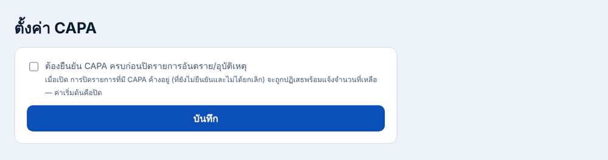
ภาพที่ 20 ตั้งค่า CAPA ที่ ตั้งค่า CAPA เปิดตัวเลือกนี้แล้ว รายการอันตรายหรืออุบัติเหตุที่มี CAPA ค้างอยู่ (ยังไม่ยืนยันและไม่ได้ยกเลิก) จะปิดไม่ได้ ข้อความแจ้งจำนวนที่เหลือ ค่าตั้งต้นคือปิดตัวเลือกนี้ เหมาะกับองค์กรที่ต้องการให้การแก้ไขถาวรเสร็จก่อนปิดเรื่อง แต่จะทำให้รายการค้างนานขึ้นถ้าเจ้าของ CAPA ตามงานไม่ทัน เปิดเมื่อมีผู้ยืนยัน CAPA พอและกระบวนการติดตามเข้าที่แล้ว
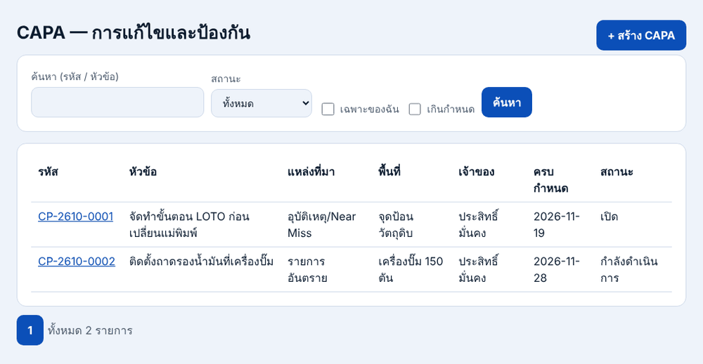
ภาพที่ 21 รายการ CAPA กรองตามสถานะ งานของฉัน และเกินกำหนดได้
บทที่ 7 รายงาน และกำหนดส่งรายงานรายงานสี่ชนิด
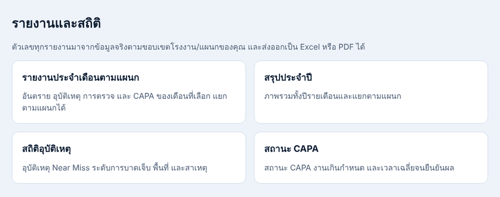
ภาพที่ 22 เมนูรายงานและสถิติ
รายงาน เนื้อหา รายงานประจำเดือนตามแผนก เลือกปี เดือน และแผนก แสดงจำนวนที่แจ้ง ปิด ค้างและเกินกำหนดปลายเดือน ความเสี่ยงสูงที่ยังค้าง อุบัติเหตุ Near Miss วันปลอดอุบัติเหตุหยุดงาน รอบตรวจ คะแนนตรวจเฉลี่ย และ CAPA พร้อมตารางแยกประเภท พื้นที่ และรายการเกินกำหนด สรุปประจำปี สรุปรายเดือนทั้งปี และแยกตามแผนก สถิติอุบัติเหตุ รายเดือน ตามระดับบาดเจ็บ พื้นที่ที่เกิดบ่อย และสาเหตุ รวมวันหยุดงาน สถานะ CAPA จำนวนตามสถานะ รายการเกินกำหนด เวลาเฉลี่ยที่ใช้ปิด และแยกตามแหล่งที่มา
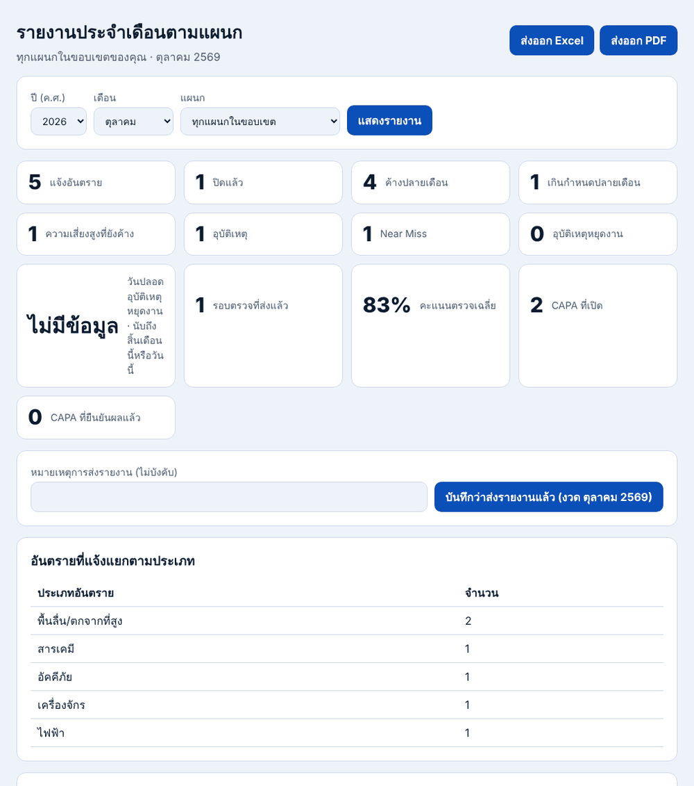
ภาพที่ 23 รายงานประจำเดือน ปุ่ม «ส่งออก Excel» และ «ส่งออก PDF» อยู่มุมบนขวาของรายงาน (ผู้ที่มีสิทธิ์ส่งออกเท่านั้นที่เห็น)
ผู้ดูแลระบบกับผู้ถือ report.view เปิดดูได้ ส่วนการดาวน์โหลด Excel/PDF ต้องมี report.export
ผู้ใช้เห็นเฉพาะข้อมูลในขอบเขตของตน แผนกนอกขอบเขตเปิดไม่ได้ (ระบบแจ้งว่าไม่พบ)
ตัวเลขรายงานดึงจากข้อมูลเดียวกับที่แสดงบนหน้าจอ ไฟล์ Excel และ PDF จึงตรงกับหน้ารายงานเสมอ
ข้อความที่ขึ้นต้นด้วย = + - @ ถูกเขียนเป็นข้อความธรรมดาใน Excel ป้องกันสูตรแฝงจากชื่อรายการที่ผู้ใช้พิมพ์
ไม่มีชื่อบุคคลที่เป็นผู้เกี่ยวข้องในอุบัติเหตุในรายงานใด ๆ ไม่ว่าจะมีสิทธิ์ใดก็ตาม
PDF ใช้ฟอนต์ Loma ที่แถมมา ถ้าต้องการ Sarabun ให้นำ Sarabun-Regular.ttf และ Sarabun-Bold.ttf ไปวางที่ shared\assets\fonts\ ระบบเลือก Sarabun ก่อนอัตโนมัติ
ผู้ถือ report.view เห็นหัวข้ออันตรายและ CAPA ทั้งหมดในขอบเขต รายงานจำกัดตามโรงงาน/แผนกเท่านั้น ไม่ได้ตรวจสิทธิ์ทีละรายการ ถ้าคุณสร้างบทบาทที่มี report.view ให้ถือว่าเขาเห็นหัวข้อรายการและชื่อเจ้าของ CAPA ในขอบเขตของเขาทั้งหมด ซึ่งตั้งใจไว้ให้หัวหน้าหน่วยงานใช้ทำรายงาน ถ้าต้องจำกัดมากกว่านี้ ต้องปรับที่ตัวโปรแกรม
กำหนดส่งรายงาน
บริษัทส่วนใหญ่ต้องส่งรายงานความปลอดภัยให้ผู้บริหารหรือหน่วยงานกำกับเป็นรอบ ระบบช่วยตามว่าใครส่งหรือยัง ไม่ได้ส่งรายงานให้เอง แต่เตือนคนที่ต้องส่ง และบันทึกว่าส่งแล้ว
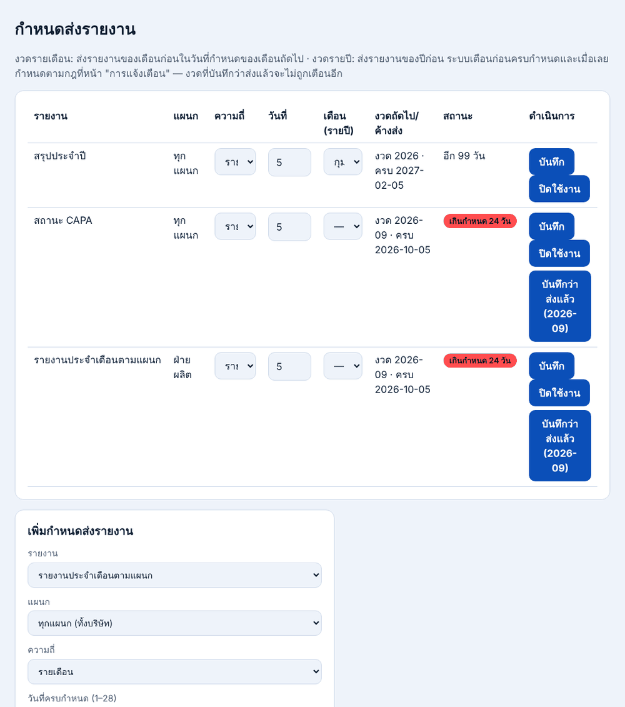
ภาพที่ 24 Safety › กำหนดส่งรายงาน แต่ละกฎมีงวดถัดไป สถานะ และปุ่มบันทึกว่าส่งแล้ว
ช่อง ความหมาย รายงาน หนึ่งในสี่ชนิด ความถี่ของรายงานกำหนดตามชนิด คือรายงานประจำเดือนและ CAPA เป็นรายเดือน ส่วนสรุปประจำปีและสถิติอุบัติเหตุเป็นรายปี ตั้งไม่ตรงชนิดไม่ได้ แผนก ระบุแผนก หรือ «ทุกแผนก (ทั้งบริษัท)» ผู้ที่มีขอบเขตเฉพาะโรงงานหรือแผนกตั้งกฎทั้งบริษัทไม่ได้ วันที่ครบกำหนด 1–28 ของเดือน (ห้ามเกิน 28 เพื่อให้ตรงทุกเดือน) เดือนที่ครบกำหนด เฉพาะรายปี เป็นเดือนที่ต้องส่งรายงานของปีก่อนหน้า
กติกาของงวด: งวดรายเดือนคือรายงานของเดือนก่อน ที่ส่งภายในวันที่กำหนดของเดือนถัดมา เช่น ตั้งวันที่ 5 รายงานเดือนตุลาคมต้องส่งภายใน 5 พฤศจิกายน งวดรายปีคือรายงานของปีก่อนที่ส่งภายในวันที่และเดือนที่กำหนดของปีถัดไป
บันทึกว่าส่งแล้ว
ทำได้จากหน้ากำหนดส่ง หรือจากหน้ารายงานโดยตรง (ปุ่ม «บันทึกว่าส่งรายงานแล้ว» ใต้รายงาน) ผู้ที่ทำได้ต้องมี report.export หรือ report.manage
บันทึกได้เฉพาะงวดที่จบครบแล้ว เท่านั้น ระบบไม่รับเดือนที่ยังไม่สิ้นสุด หรือปีที่ยังไม่จบ
แต่ละงวดของแต่ละแผนกบันทึกได้ครั้งเดียว ประวัติลบหรือแก้ไม่ได้ ถ้ากดผิด ให้ใส่หมายเหตุในงวดถัดไปแทน
ผู้ใช้ที่มีขอบเขตแผนกเดียว ระบบใช้แผนกของเขาเอง ผู้ที่มีขอบเขตระดับโรงงานต้องเลือกแผนก มีเฉพาะผู้ไม่จำกัดขอบเขตที่บันทึกในนามทั้งบริษัทได้
งวดที่ค้างส่ง
กฎแสดงงวดที่ค้างส่งเก่าที่สุดก่อน ย้อนดูได้ 12 งวดสำหรับรายเดือนและ 3 งวดสำหรับรายปี เมื่อบันทึกว่าส่งงวดนั้นแล้ว ระบบแสดงงวดค้างถัดไป จนครบ จึงแสดงงวดข้างหน้า กำหนดส่งที่เลยมาก่อนวันที่สร้างกฎ ไม่ถูกนับว่าค้าง ระบบไม่เตือนย้อนหลังให้ตกใจในวันที่เริ่มใช้ และถ้าปิดกฎแล้วเปิดใหม่ วันที่สร้างจะนับใหม่จากวันที่เปิด
การเตือนทำผ่านกฎที่หน้า «การแจ้งเตือน» ค่าตั้งต้นคือ ก่อนครบ 3 วันถึงหัวหน้าหน่วยงาน เลยกำหนด 1 วันถึงหัวหน้าหน่วยงาน และเลยกำหนด 3 วันถึงผู้ประเมิน งวดที่บันทึกว่าส่งแล้วไม่ถูกเตือนอีก
บทที่ 8 การแจ้งเตือนการแจ้งเตือนทำงานเป็นกฎ: เมื่อเกิดเหตุการณ์นี้ ส่งให้ใคร ทางช่องทางไหน ทุกอย่างตั้งได้ที่เมนู การแจ้งเตือน (ผู้ถือ users.manage) ไม่ต้องแก้โปรแกรม
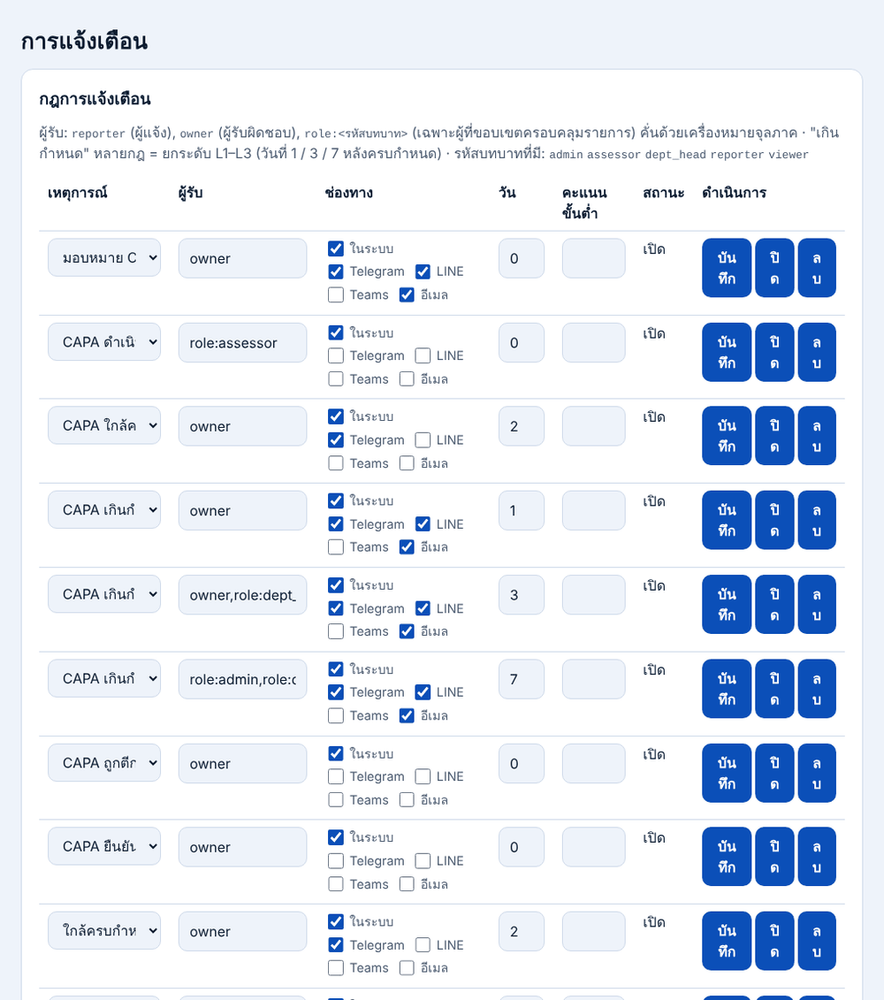
ภาพที่ 25 หน้าการแจ้งเตือน กฎ ช่วงเวลาเงียบ สถานะช่องทาง และคิวข้อความ กฎการแจ้งเตือน
ช่อง ความหมาย เหตุการณ์ แจ้งอันตรายใหม่ ประเมิน มอบหมาย ปิด ปฏิเสธ ใกล้ครบกำหนด เกินกำหนด เหตุการณ์ของอุบัติเหตุ CAPA การตรวจ และการส่งรายงาน ผู้รับ เขียนคั่นด้วยจุลภาค ใช้ได้สี่แบบดูตารางถัดไป ช่องทาง ในระบบ (กระดิ่ง), Telegram, LINE, Teams, อีเมล เลือกได้หลายช่องต่อหนึ่งกฎ จำนวนวัน สำหรับ «ใกล้ครบกำหนด» คือกี่วันก่อนครบ (0–60) สำหรับ «เกินกำหนด» คือกี่วันหลังครบ (เริ่มที่ 1) คะแนนขั้นต่ำ ใช้กับเหตุการณ์ประเมินความเสี่ยง ส่งเฉพาะรายการที่คะแนนถึงเกณฑ์ ค่าตั้งต้น 17
ชนิดของผู้รับ
เขียนว่า ได้แก่ reporterผู้แจ้งรายการ ownerผู้รับผิดชอบหรือเจ้าของงานของรายการนั้น owner_else:assessorเจ้าของงาน แต่ถ้ารายการไม่มีเจ้าของ ให้ผู้ที่มีบทบาทที่ระบุ (ที่นี่คือ assessor) ซึ่งขอบเขตครอบคลุมพื้นที่ ใช้กับการตรวจตามแผนที่ไม่ระบุผู้ตรวจประจำ เปลี่ยนบทบาทสำรองได้ตามต้องการ role:รหัสบทบาททุกคนที่มีบทบาทนั้น เฉพาะที่ขอบเขตครอบคลุมรายการ เช่น role:dept_head
ระบบกรองผู้รับให้เอง ผู้ที่เปิดรายการนั้นไม่ได้ ไม่ได้รับแจ้ง (กันลิงก์ที่ขึ้น «ไม่พบ») ผู้ที่กระทำการนั้นเองไม่ได้รับแจ้งเรื่องของตัวเอง และคนเดียวกันได้รับแจ้งเรื่องเดียวกันขั้นเดียวกันครั้งเดียว ต่อให้เข้าข่ายหลายกฎ
กฎตั้งต้นที่ติดมา
เหตุการณ์ ผู้รับ ช่องทาง แจ้งอันตรายใหม่ ผู้ประเมิน ในระบบ, Telegram ประเมินแล้ว (คะแนน ≥ 17) หัวหน้าหน่วยงาน, ผู้ดูแลระบบ ในระบบ, Telegram, LINE มอบหมายผู้รับผิดชอบ ผู้รับผิดชอบ ทุกช่องทางยกเว้น Teams ปิด / ปฏิเสธ ผู้แจ้ง ในระบบ ใกล้ครบกำหนด (2 วันก่อน) ผู้รับผิดชอบ ในระบบ, Telegram เกินกำหนด 1 / 3 / 7 วัน ผู้รับผิดชอบ / + หัวหน้าหน่วยงาน / ผู้ดูแล + หัวหน้าหน่วยงาน ในระบบ, Telegram, LINE, อีเมล
เหตุการณ์ของอุบัติเหตุ CAPA การตรวจ และรายงานมีกฎตั้งต้นในทำนองเดียวกัน ดูครบที่หน้าการแจ้งเตือน ถ้าไม่ต้องการเหตุการณ์ใด กด «ปิด» ที่กฎนั้นแทนการลบ จะเปิดกลับได้ ระบบเตือนถ้าไม่มีกฎที่เปิดอยู่เลย
เปิดช่องทางภายนอก
กระดิ่งในระบบใช้ได้เสมอ ช่องทางอื่นต้องตั้งค่าที่ .env ฝั่งเซิร์ฟเวอร์หนึ่งครั้ง แล้วผู้ใช้แต่ละคนกรอกข้อมูลติดต่อที่ «โปรไฟล์» และเลือกรับ (ยกเว้น Teams ซึ่งส่งเป็นประกาศเข้ากลุ่ม)
ช่องทาง ตั้งใน .env ฝั่งผู้ใช้ Telegram TELEGRAM_BOT_TOKEN จาก BotFatherchat id ของผู้ใช้ ผู้ใช้ต้องกด Start กับบอตก่อน บอตจึงส่งหาได้ LINE LINE_CHANNEL_TOKEN ของ Messaging APIuser id ขึ้นต้นด้วย U ตามด้วยอักขระ 32 ตัว Teams TEAMS_WEBHOOK_URL ของช่องที่ต้องการไม่ต้องตั้ง ระบบประกาศหนึ่งข้อความต่อกฎ ต่อรายการ ต่อขั้น อีเมล SMTP_HOST, SMTP_PORT, SMTP_TLS, SMTP_USER, SMTP_PASSWORD, SMTP_FROMที่อยู่อีเมลของผู้ใช้
แก้ .env แล้วดับเบิลคลิก RestartPortal.bat จากนั้นเปิดหน้าการแจ้งเตือน ส่วน สถานะช่องทาง บอกว่าช่องไหนตั้งค่าแล้วหรือยัง
ช่วงเวลาเงียบและงานประจำวัน
ช่วงเวลาเงียบ ค่าตั้งต้น 22:00–06:00 ข้อความนอกระบบที่ไม่เร่งด่วนถูกเก็บไว้ส่งหลังช่วงนี้ กระดิ่งในระบบและข้อความเร่งด่วนไม่ถูกหน่วง ตั้งเริ่มเท่ากับสิ้นสุดหมายถึงไม่มีช่วงเงียบเวลารันงานประจำวัน ค่าตั้งต้น 07:30 วันละครั้ง ระบบตรวจรายการที่ใกล้ครบ เกินกำหนด แผนการตรวจที่ถึงรอบ และกำหนดส่งรายงาน แล้วสร้างแจ้งเตือน พร้อมสำรองฐานข้อมูลของ Safety ไว้ที่โฟลเดอร์ backups ข้างไฟล์ฐานข้อมูล เก็บ 14 ไฟล์ล่าสุดกดปุ่ม รันงานประจำวันตอนนี้ เพื่อทดสอบ ผลที่ได้ไม่ซ้ำของเดิม เพราะระบบจำว่าเตือนเรื่องใดขั้นใดไปแล้ว
ต้องรัน Safety เพียงโปรเซสเดียว ตัวส่งข้อความและงานประจำวันอยู่ในโปรเซสนั้น ถ้าจำเป็นต้องรันหลายโปรเซส ตั้ง SAFETY_DISABLE_BACKGROUND=1 ในโปรเซสที่เหลือ
คิวข้อความภายนอก
ข้อความนอกระบบทุกข้อความเข้าคิวก่อนส่ง ล้มเหลวแล้วระบบลองใหม่ตามรอบ ครบจำนวนครั้งแล้วยังไม่สำเร็จจะเป็นสถานะถาวร ตารางคิวแสดงปลายทางแบบปกปิดบางส่วน หัวข้อ จำนวนครั้งที่ลอง และข้อผิดพลาดล่าสุด
สถานะ ความหมาย / ทำอะไรต่อ รอส่ง อยู่ในคิว รอรอบส่งถัดไป หรือรอพ้นช่วงเงียบ ล้มเหลว (จะลองใหม่) ส่งไม่สำเร็จ ระบบจะลองอีก อ่านข้อผิดพลาดในตารางว่าเป็นเรื่องโทเคนหรือเครือข่าย ส่งไม่สำเร็จถาวร เลิกลองแล้ว แก้สาเหตุ (เช่น โทเคนผิด) แล้วกด «ส่งใหม่» ยกเลิก ผู้ดูแลกดยกเลิก ใช้กับข้อความที่ไม่ควรส่งแล้ว ส่งแล้ว เสร็จสมบูรณ์
ทดสอบทุกช่องทางก่อนพึ่งพา ปุ่ม ส่งข้อความทดสอบถึงฉัน ส่งเข้ากระดิ่งของคุณ และส่งไปตามข้อมูลติดต่อและช่องทางที่คุณเลือกในโปรไฟล์ของตัวเอง (ไม่รวม Teams ซึ่งทดสอบได้ด้วยการสร้างรายการจริงที่เข้ากฎ) ทดสอบด้วยบัญชีของคุณก่อน แล้วสร้างรายการอันตรายจริงหนึ่งรายการให้ผู้รับตัวอย่างเห็นข้อความที่ไปถึงจริงในแต่ละช่องทาง ระบบผ่านการทดสอบกับตัวจำลองเท่านั้น การลองกับ Telegram LINE Teams และอีเมลจริงเป็นขั้นที่คุณต้องทำเอง
บทที่ 9 งานดูแลประจำ สำรองข้อมูล อัปเกรดงานที่ควรทำเป็นรอบ
ความถี่ งาน ทุกวัน ดูว่าระบบเปิดอยู่ (เปิด Hub ได้และเข้า Safety ได้) ถ้าตั้งงานประจำวัน มองหา «รันงานประจำวัน» ว่าทำงานตามเวลา ทุกสัปดาห์ ดูคิวข้อความที่หน้าการแจ้งเตือน ว่ามี «ส่งไม่สำเร็จถาวร» ค้างหรือไม่ และคัดลอกโฟลเดอร์สำรองออกจากเครื่อง ทุกเดือน ตรวจรายการผู้ใช้ ปิดบัญชีคนที่ย้ายหรือลาออก ที่ Hub ตรวจขอบเขตของผู้ที่ย้ายแผนก ตรวจกำหนดส่งรายงานที่ค้าง ทุกไตรมาส ทบทวนข้อมูลหลัก ประเภทอันตรายที่ไม่มีใครใช้ พื้นที่ที่ยุบไปแล้ว กฎแจ้งเตือนที่ผู้รับเปลี่ยนไป และทดลองกู้คืนข้อมูลจากไฟล์สำรอง
สำรองข้อมูล
ข้อมูลที่ต้องสำรองมีสามอย่าง ฐานข้อมูล Hub ฐานข้อมูล Safety และโฟลเดอร์รูปภาพ backup.bat สำรองครบทั้งสามไว้ที่ backup\วันที่-เวลา โดยใช้วิธีสำรองของ SQLite ที่ปลอดภัยแม้ระบบกำลังเปิดอยู่ จึงไม่ต้องหยุดระบบ งานประจำวันของ Safety ยังสำรองฐานข้อมูล Safety เพิ่มอีกชุดที่ safety\data\backups เก็บ 14 ไฟล์ล่าสุด แต่ชุดนี้ไม่ใช่ที่สำรองเดียว เพราะอยู่ในเครื่องเดียวกับข้อมูลจริง
สำรองที่อยู่ในเครื่องเดียวกัน ไม่ใช่การสำรอง ถ้าดิสก์เสียหรือเครื่องถูกขโมย ทั้งข้อมูลจริงและไฟล์สำรองหายพร้อมกัน ให้คัดลอกโฟลเดอร์ backup ไปไว้เครื่องอื่นหรือไดรฟ์เครือข่ายเป็นประจำ ตั้งให้ Windows Task Scheduler รัน backup.bat ทุกคืนแล้วคัดลอกออกจะสบายใจที่สุด
กู้คืน
รัน stop.bat ปิดระบบ
คัดลอกไฟล์ hub.db ไปทับ hub\data\hub.db และ safety.db ไปทับ safety\data\safety.db จากโฟลเดอร์สำรองวันที่ต้องการ (เก็บไฟล์ปัจจุบันไว้ก่อน เผื่อกู้ผิด)
คัดลอกโฟลเดอร์ uploads จากชุดสำรองเดียวกันไปทับ safety\data\uploads
รัน start.bat แล้วเปิดดูรายการล่าสุดว่าเป็นข้อมูลของวันที่คาดไว้
ข้อมูลที่เกิดหลังวันสำรองจะหายไป จึงควรบอกผู้ใช้ให้ทราบและให้บันทึกซ้ำเท่าที่จำเป็น ควรซ้อมกู้คืนบนเครื่องทดสอบสักครั้งก่อนวันที่ต้องใช้จริง
อัปเกรดเวอร์ชัน
อัปเกรดไม่ต้องติดตั้งใหม่ ใช้ install.bat ครั้งเดียวตอนติดตั้งครั้งแรกเท่านั้น หลังจากนั้นอัปเดตด้วยสามขั้น
รัน backup.bat แล้วคัดลอกโฟลเดอร์สำรองออกจากเครื่อง (ไม่ต้องปิดระบบก่อน) แจ้งผู้ใช้ว่าจะมีช่วงปิดสั้น ๆ
แตก Zip เวอร์ชันใหม่ทับโฟลเดอร์เดิม ไฟล์ .env, hub\data และ safety\data จะไม่ถูกทับ
ดับเบิลคลิก RestartPortal.bat ระบบปิดของเดิม ติดตั้งไลบรารีใหม่ถ้ามี และเปิดใหม่เบื้องหลัง ฐานข้อมูลอัปเกรดตัวเองตอนเปิด
หลังเปิดแล้วเข้าไปดูหน้า «ประเภทผู้ใช้งาน» ว่ามีสิทธิ์ใหม่ที่ต้องติ๊กให้บทบาทเดิมหรือไม่ (บทที่ 4) ถ้า RestartPortal ขึ้นข้อความว่าเปิดไม่สำเร็จ ให้ดู log สองไฟล์ที่ระบุ ระบบเดิมจะไม่เสียหายเพราะข้อมูลอยู่แยกจากโปรแกรม
บันทึกการทำงาน (log)
แต่ละโปรแกรมเขียน log ที่ hub\data\hub.log และ safety\data\safety.log เปิดด้วย Notepad ดูบรรทัดท้ายสุดเมื่อมีปัญหา ข้อผิดพลาดที่ผู้ใช้เจอมักมีบรรทัดอธิบายเพิ่มที่นี่ ไฟล์โตเรื่อย ๆ ถ้าใหญ่ผิดปกติให้หยุดระบบ ย้ายไฟล์ออกไปเก็บ แล้วเปิดใหม่ระบบจะสร้างไฟล์ใหม่
ความปลอดภัย
ตั้งรหัสผ่านผู้ดูแลระบบให้ยาวและเดายาก ไม่ใช้ร่วมกับระบบอื่น และมีผู้ดูแลระบบอย่างน้อยสองคนเพื่อไม่ให้ล็อกตัวเองออก
จำกัดผู้ที่เข้า Hub › ผู้ใช้งาน และ Safety › ผู้ใช้งาน ให้เฉพาะคนที่จำเป็น สิทธิ์ users.manage และ roles.manage ให้เป็นรายคน ไม่ให้ทั้งฝ่าย
ถ้าเข้าจากนอกเครือข่าย ใช้ https ผ่าน reverse proxy ตามบทที่ 2
ติดตั้งการอัปเดต Windows ตามปกติ ระบบนี้ไม่ได้จัดการให้
ยังไม่ได้สแกนช่องโหว่ด้วยเครื่องมือภายนอก (DAST) ถ้าบริษัทมีนโยบายตรวจก่อนใช้งานจริง ให้ฝ่ายไอทีสแกนก่อน
สิ่งที่ระบบนี้ยังไม่มี ไม่มีเครื่องมือนำเข้าข้อมูลเดิมจาก Excel ถ้ามีรายการย้อนหลังที่ต้องย้ายเข้า ต้องให้ผู้พัฒนาทำเครื่องมือเพิ่ม ไม่มีเครื่องมือลบหรือปกปิดข้อมูลส่วนบุคคลย้อนหลัง และการแจ้งเตือนทางช่องทางภายนอกยังไม่เคยทดสอบกับบริการจริง
บทที่ 10 แก้ปัญหาติดตั้งและเปิดระบบ
อาการ สาเหตุที่พบบ่อย วิธีตรวจและแก้ install.bat บอกไม่พบ Python ยังไม่ได้ติดตั้ง หรือไม่ได้ติ๊ก Add to PATH ติดตั้ง Python 3.10+ จาก python.org โดยติ๊ก Add python.exe to PATH ปิดหน้าต่าง แล้วรัน install.bat ใหม่ ติดตั้งไลบรารีไม่สำเร็จ ไม่มีอินเทอร์เน็ต หรือผ่านพร็อกซีของบริษัท ต่ออินเทอร์เน็ตตอนติดตั้ง ถ้าอยู่หลังพร็อกซี ให้ฝ่ายไอทีตั้งค่า pip ให้ผ่านพร็อกซี start.bat บอกพอร์ตมีโปรแกรมอื่นใช้ ระบบเปิดค้างอยู่แล้ว หรือชนกับระบบอื่นบนเครื่อง ดับเบิลคลิก RestartPortal.bat (ปิดแล้วเปิดใหม่ให้) ถ้ายังชน แก้ HUB_PORT / SAFETY_PORT และ HUB_URL / SAFETY_URL ใน .env เป็นพอร์ตอื่น แล้วรัน RestartPortal.bat อีกครั้ง ระบบไม่ตอบ แต่ไม่เห็นหน้าต่างอะไรเปิดอยู่ ระบบทำงานเบื้องหลัง จึงไม่มีหน้าต่างให้เห็น ตรวจด้วยการเปิด Hub ในเบราว์เซอร์ ถ้าไม่ขึ้น ดับเบิลคลิก RestartPortal.bat แล้วดู hub\\data\\hub.log และ safety\\data\\safety.log ถ้าตรวจจากหน้าต่างคำสั่ง ใช้ .venv\\Scripts\\python.exe tools\\service.py status ระบบไม่เริ่มทำงาน ฟ้องเรื่อง SSO_SECRET ค่ายังเป็น change-me หรือสั้นกว่า 32 ตัว ตั้งค่าสุ่มยาวอย่างน้อย 32 ตัวใน .env ทั้งสองโปรแกรมใช้ไฟล์เดียวกัน เครื่องอื่นเปิดไม่ได้ แต่เครื่องเซิร์ฟเวอร์เปิดได้ ไฟร์วอลล์บล็อก รัน firewall.bat แบบ Administrator และตรวจว่าที่อยู่ที่ใช้เปิดตรงกับชื่อหรือ IP ที่ตั้งไว้ ปุ่ม UT CMMS / E-Checksheet ไม่ขึ้นบน Hub ไม่ได้ตั้งที่อยู่ และไม่พบโปรแกรมฟังพอร์ต 5000 เพิ่มที่ Hub › ทะเบียนระบบ เลือกการเชื่อมต่อ «เปิดลิงก์ตรง» หรือใส่ UTCMMS_URL / ECHECK_URL ใน .env
การเข้าระบบและสิทธิ์
อาการ สาเหตุที่พบบ่อย วิธีตรวจและแก้ กดไทล์ Safety แล้วขึ้น «เข้าสู่ระบบไม่สำเร็จ» SSO_SECRET ไม่ตรงกัน ลิงก์ถูกใช้ซ้ำหรือหมดอายุ นาฬิกาสองโปรแกรมคลาดเคลื่อน บัญชีถูกปิดใช้งาน หรือ HUB_URL/SAFETY_URL ไม่ตรงที่อยู่จริง กดปุ่มกลับ Hub แล้วเข้าใหม่ ถ้ายังเป็น ตรวจ .env ว่า SSO_SECRET และ SERVICE_TOKEN เหมือนกันและที่อยู่ในทะเบียนระบบตรงกับ SAFETY_URL ตรวจว่าบัญชีไม่ถูกปิดทั้งที่ Hub และ Safety ผู้ใช้ไม่เห็นเมนูที่ควรมี บทบาทไม่มีสิทธิ์นั้น (มักเกิดหลังอัปเกรด) Safety › ประเภทผู้ใช้งาน ติ๊กสิทธิ์ให้บทบาท แล้วให้ผู้ใช้รีเฟรชหน้า ผู้ใช้ไม่เห็นรายการของแผนกอื่น ขอบเขตโรงงาน/แผนกจำกัดไว้ ตรวจที่ Safety › ผู้ใช้งาน คอลัมน์ขอบเขตหน่วยงาน ปรับให้ตรงหน้าที่ ผู้ใช้ทั่วไป (ผู้แจ้ง) เห็นเฉพาะรายการที่ตนแจ้งหรือถูกมอบหมายอยู่แล้วตามการออกแบบ เลือกผู้รับผิดชอบไม่เจอ หรือถูกปฏิเสธ «อยู่นอกขอบเขต» ขอบเขตของผู้ใช้ไม่ครอบคลุมพื้นที่ของรายการ ปรับขอบเขตของผู้ใช้คนนั้น หรือเลือกคนอื่น ปิดผู้ดูแลระบบไม่ได้ เป็นผู้ดูแลที่ใช้งานอยู่คนสุดท้าย ตั้งผู้ดูแลอีกคนก่อน กดออกจากระบบแล้วค้างหน้า «ไม่สามารถเข้าถึงเพจนี้ได้» ที่ localhost:5200 เวอร์ชันเก่าส่งผู้ใช้ไปที่อยู่ localhost ของ Safety ซึ่งเครื่องผู้ใช้ไม่ใช่เซิร์ฟเวอร์ อัปเกรดเป็นเวอร์ชันนี้ ซึ่งกลับหน้าเข้าสู่ระบบของ Hub เสมอและใช้ที่อยู่ที่ผู้ใช้เปิดเข้ามา ผู้ใช้ที่ปิดบัญชีที่ Hub ยังเข้า Safety อยู่ Safety จำสถานะไว้สั้น ๆ รอไม่เกินประมาณ 1 นาที เข้าไม่ได้เอง
การใช้งานประจำวัน
อาการ สาเหตุที่พบบ่อย วิธีตรวจและแก้ ผู้ใช้แจ้งอันตรายแล้วไม่มีตัวเลือกประเภท/แหล่งที่มา ยังไม่ได้เพิ่มข้อมูลหลัก เพิ่มที่ Safety › ประเภทอันตราย และ แหล่งที่มา (ขึ้นต้นว่างเปล่า) ประเมินแล้วขึ้น «คะแนนนี้ไม่มีระดับความเสี่ยงรองรับ» เกณฑ์ความเสี่ยงมีช่องว่างของช่วงคะแนน เกณฑ์ความเสี่ยง ตรวจช่วงคะแนนของทุกระดับให้ครอบคลุม 1 ถึงคะแนนสูงสุด ปิดรายการไม่ได้ ขึ้นเรื่อง CAPA ค้าง เปิดการบังคับ CAPA และมีที่ยังไม่ยืนยัน ยืนยันหรือยกเลิก CAPA ที่ค้าง หรือปิดตัวเลือกที่ «ตั้งค่า CAPA» ถ้านโยบายอนุญาต ปิดรายการไม่ได้ ขึ้นเรื่องผู้ที่เคยรับผิดชอบ กติกาสองคนตรวจกัน ให้ผู้อื่นที่ถือสิทธิ์ปิดเป็นผู้ปิด ยืนยัน CAPA ไม่ได้ ขึ้นว่าเคยเป็นเจ้าของหรือเป็นผู้กดเสร็จ กติกาสองคนตรวจกัน หรือมีผู้ถือ capa.verify ไม่พอ ให้สิทธิ์ capa.verify แก่อีกอย่างน้อยหนึ่งคน «ข้อมูลรายการนี้ถูกแก้ไขโดยผู้อื่นแล้ว กรุณารีเฟรช» สองคนเปิดรายการเดียวกันและคนหนึ่งบันทึกก่อน ระบบกันการเขียนทับ รีเฟรชหน้าและทำรายการใหม่ ไม่ใช่ข้อบกพร่อง ดาวน์โหลดรายงาน Excel/PDF ไม่ได้ ไม่มีสิทธิ์ report.export หรือฟอนต์ PDF มีปัญหา ติ๊ก report.export ให้บทบาท ถ้า PDF ภาษาไทยเพี้ยน ตรวจโฟลเดอร์ shared\assets\fonts ว่ามีไฟล์ฟอนต์ครบ บันทึกว่าส่งรายงานไม่ได้ «งวดไม่ถูกต้อง» หรือ «ยังไม่ถึงงวด» งวดยังไม่จบ หรือรูปแบบไม่ตรงชนิดรายงาน รายงานรายเดือนบันทึกได้เฉพาะเดือนที่จบแล้ว รายปีเฉพาะปีที่จบแล้ว
การแจ้งเตือน
อาการ สาเหตุที่พบบ่อย วิธีตรวจและแก้ ไม่มีแจ้งเตือนเลย ไม่มีกฎเปิดอยู่ หรือกฎของเหตุการณ์นั้นถูกปิด หน้าการแจ้งเตือน ตรวจว่ามีกฎที่เปิดสำหรับเหตุการณ์นั้น กระดิ่งมี แต่ Telegram/LINE ไม่มา ช่องทางไม่ได้ตั้งใน .env ผู้ใช้ไม่ได้กรอก/ไม่ได้ติ๊กรับในโปรไฟล์ หรืออยู่ในเวลาเงียบ ดูสถานะช่องทาง ดูคิวข้อความ ตรวจโปรไฟล์ผู้รับ ถ้าสถานะเป็นล้มเหลวอ่านข้อผิดพลาดในตาราง ผู้รับบางคนไม่ได้รับ ขอบเขตผู้ใช้ไม่ครอบคลุมรายการ จึงเปิดรายการนั้นไม่ได้ ตรวจขอบเขตของผู้รับ ระบบไม่แจ้งคนที่เปิดรายการไม่ได้ตามการออกแบบ แจ้งเตือนเกินกำหนดไม่ออกตามเวลา งานประจำวันยังไม่ถึงเวลา หรือโปรเซสถูกปิด ดูเวลารันงานประจำวัน ลองกด «รันงานประจำวันตอนนี้» ตรวจ safety.log
ก่อนส่งเรื่องให้ผู้พัฒนา
เตรียมข้อมูลเหล่านี้ไปด้วย จะแก้ได้เร็วกว่าเล่าอาการอย่างเดียวมาก
เวอร์ชันของชุดติดตั้ง (ชื่อไฟล์ Zip ที่ใช้) และวันที่ติดตั้งหรืออัปเกรดล่าสุด
ขั้นตอนที่ทำจนเกิดอาการ ข้อความที่ขึ้นตามตัวอักษร และภาพหน้าจอ
หน้าสุดท้ายของ safety\data\safety.log หรือ hub\data\hub.log ช่วงเวลาที่เกิดเหตุ
อย่าส่งไฟล์ .env หรือฐานข้อมูลทั้งไฟล์ ในไฟล์เหล่านี้มีความลับและข้อมูลส่วนบุคคล
ภาคผนวก ก: ที่อยู่หน้าสำคัญ
หน้า ที่อยู่ (ต่อท้ายที่อยู่ Safety) สิทธิ์ที่ต้องมี ผู้ใช้งาน /admin/usersusers.manage ประเภทผู้ใช้งาน /admin/rolesroles.manage เกณฑ์ความเสี่ยง, ฟิลด์เพิ่มเติม, ระดับบาดเจ็บ, ตั้งค่า CAPA /admin/criteria, /admin/custom-fields, /admin/injury-severities, /admin/capa-settingscriteria.manage แบบตรวจ, แผนการตรวจ /admin/checklists, /admin/patrol-planspatrol.manage กำหนดส่งรายงาน /admin/report-duereport.manage การแจ้งเตือน /admin/notificationsusers.manage ข้อมูลหลัก /master/factories, /master/departments, /master/lines, /master/risk-areas, /master/hazard-types, /master/hazard-sources, /master/incident-causesดู: master.view · แก้: master.edit ภาพรวม /overview, /overview/departmentsmaster.view Hub: ผู้ใช้งาน, ทะเบียนระบบ (ที่อยู่ Hub) /admin/users, /admin/appsผู้ดูแลระบบของ Hub
ภาคผนวก ข: รายการตรวจก่อนเปิดให้ผู้ใช้จริง
ทำแล้ว รายการ ☐ SSO_SECRET ยาว ≥ 32 ตัว และ SERVICE_TOKEN เป็นค่าสุ่มของเราเอง ตรงกันทั้งสองโปรแกรม ☐ เปิดจากเครื่องผู้ใช้จริงได้ (ไฟร์วอลล์ผ่าน) และกดไทล์ Safety เข้าได้โดยไม่ถามรหัสซ้ำ ☐ รหัสผ่านผู้ดูแลระบบเดายาก และมีผู้ดูแลอย่างน้อยสองคน ☐ ติ๊กสิทธิ์ให้บทบาทครบตามหน้าที่ (รวมสิทธิ์ใหม่ของ incident, patrol, capa, report) ☐ ผู้ถือสิทธิ์ปิดรายการและยืนยัน CAPA มีอย่างน้อยสองคนต่อโรงงาน ☐ กรอกโรงงาน แผนก ไลน์ พื้นที่เสี่ยง ประเภทอันตราย แหล่งที่มาแล้ว และกำหนดขอบเขตผู้ใช้ทุกคน ☐ ตรวจเกณฑ์ความเสี่ยงกับมาตรฐานบริษัท และตั้งระดับบาดเจ็บที่ «นับเป็นหยุดงาน» ☐ ตั้งกำหนดส่งรายงานและตรวจกฎแจ้งเตือน ทดสอบช่องทางที่ใช้จริง ☐ รัน backup.bat สำเร็จหนึ่งครั้ง คัดลอกออกจากเครื่อง และลองกู้คืนบนเครื่องทดสอบ ☐ ตั้ง autostart.bat ให้เปิดเองเมื่อเปิดเครื่อง และทดสอบด้วยการรีสตาร์ตเครื่องหนึ่งครั้ง ☐ ทดลองใช้ครบวงจรกับผู้ใช้กลุ่มเล็ก 1–2 สัปดาห์ รวมทั้งบนมือถือจริง แล้วเก็บข้อเสนอแนะก่อนขยาย